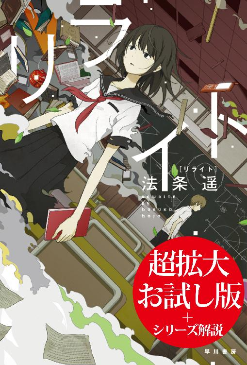

| リライト | |
| Unknown | |

リライト
〔お試し版〕
法条 遥
「ＳＦ史上最悪のパラドックス、その完璧で無慈悲な収束」
というキャッチコピーで刊行された本書『リライト』の舞台は、静岡県志太郡岡部町。一九九二年夏のある日、中学二年の美雪は、三〇〇年後の未来から来たという少年・保彦と出会います。ある小説を探しているという保彦を手伝い、一夏をともに過ごした美雪。初めての夏祭り、一緒に食べたスイカ、ラベンダーの香りがする時を超える薬......。二人で過ごした時間はかけがえのないものになっていきますが、夏の終わりに保彦は旧校舎崩壊事故に巻き込まれてしまいます。
彼を救わなければ......。焦った美雪は「未来の自分だったら、この事故の解決策を用意しているはずだ」と信じ、保彦の時を超える薬を使って十年後へ跳びます。
こうして十年後から持ち帰った小型の機械（現在の携帯電話）を使って保彦を救い出した美雪。そんな彼女に保彦は「この機械を保管しておき、十年後、また過去からやってくる美雪に渡して」と頼んで未来へ帰っていきました。楽しかった、特別な夏の思い出を残して。
十年後、二〇〇二年夏。思いがけず作家となった美雪は、十年前の経験をもとに一冊の小説を上梓します。そして記憶通り携帯電話を用意しておきますが、いつまで経っても過去の自分はそれをとりに来ません。
――このままでは、十年前の事故で保彦は助からない。
急いで過去を調査し始めた美雪は、自分が知らないうちに同級生の何人かが死んでいることに気づきます。
なぜ記憶と現実が食い違っているのか。
それは十年前の自分が携帯電話を取りに来なかったことと関係があるのではないか。
周囲で起きる異変に怯える美雪は、何か理由がわかるかもしれないと考え、二年四組の同窓会に参加します。そこで明らかになったのは、自分だけの特別な記憶のはずだった一九九二年夏の真相で......。
〝バッドエンド版「時をかける少女」〟ともいえる大胆な内容で一躍話題となった本作。法条さん曰く、執筆のきっかけは「キラキラしていて爽やかであることだけが、青春時代じゃない」という思いだったとか。ＳＦ史上最悪のパラドックスとは何か、その驚くべき真相をお楽しみください。
そして『リライト』の続篇となる三作『リビジョン』『リアクト』『リライブ』も刊行されています。
『リビジョン』は、『リライト』から二カ月後、一九九二年秋の物語。家の女性に代々受け継がれる手鏡を使って未来予知ができる千秋霞は、生まれたばかりのひとり息子ヤスヒコが一週間後に亡くなる未来を視てしまいます。時のルールに抗ってでも、絶対に息子だけは救ってみせる――そう決意した霞は、手鏡の能力を利用して未来の改竄に挑みます。
『リアクト』はそれから五年後、一九九七年冬の物語。西暦三〇〇〇年からやってきたタイムパトロールの少女ホタルは、岡部蛍の小説『リライト』で描かれた過去の改竄に疑問を抱きます。真相を確かめるため『リライト』の作中で二年四組の同級会が開かれた二〇〇二年に向かったホタルは、彼女を「美雪」と呼ぶ女性と出会い......。
『リライブ』はさらに六年後、二〇一三年春の物語。転生し続ける盲目の女性・国枝小霧の結婚式に一通の祝辞が届きます。そこには一九九二年夏と二〇〇二年夏の真相、そして〝ある目的のためだけ〟に行われた、途方もない企みの真実が記されていて――。
「ＳＦ史上最悪のパラドックス」から始まったシリーズ最終巻のキャッチコピーは、
「未来へ跳んだ夏、過去を変えた秋、時に挑んだ冬。すべては君の、完璧な春のために」
複雑な時のルールが絡まりあった〈時と四季の物語〉全四作は、法条さんが導き出したとてもシンプルで美しい答えに収束していきます。
『リライト』のあのラストを知ってしまったら、シリーズを通した壮大な計画の真相がきっと知りたくなるはず。そう確信して、このお試し版をお届けします。
（編集者）
この十年間、大切に保管し、しまってあった携帯電話を取り出す。間違って壊したりしてしまったら大変なので、十年前の夏、中学二年生だった十四歳の夏に桐箱に納めて以来、一度も手を触れた事がない携帯電話。それを実家のベランダに敷いた座布団の上に置いた。
今日この日のために、両親と大学生の妹には自腹を切って温泉旅行を勧め、実家から追い出してある。万が一『アレ』を目撃されると大変な事になるからだ。もっとも十年前の私は何も見なかったので、今日これからやって来るであろう『私』も何も見るはずはないのだが、とにかく万全を期しておくに越した事はない。
その時が何時であるか、正確にはわからない。あの時の私は、ただ単に『十年後に』と願っただけ。十年後の今日、二〇〇二年の七月二十一日。昼間だった事は確かだから、朝の雰囲気が去ると、私は早速携帯電話を用意した。これから夕方になるまでの約十時間のうちに、この携帯電話は十年前の私の手によってベランダから持ち去られるはずである。
私と彼女は会う事はできない。姿を目にする事すら許されない。声も届かない。紙を通しての意思疎通すら駄目だ。そう彼は言っていた。もしも出会おうとすれば、つまり未来と過去の因果律を、何らかの事象によって崩そうとすれば、時空の復元力、あるいは強制力によって遮断されてしまう。本来ありえない事が起こってしまう。だから絶対にやっては駄目だよと、彼、園田保彦は言った。
園田保彦は、一九九二年七月一日に、私の居たＮ中学に転校生としてやってきた。長身で細身、優しげな容貌の、少し低い声で話す、常識知らずの彼。純粋な日本人ではないらしく、少し緑がかった瞳をしていた、たった二十日間だけの私の初恋の人。電話の掛け方も知らなかった。『現代』の電話など遥かに超越した通信機器が普及した世界から、時代からやって来た彼が、古代世界の遺物である『原始的な』電話など、操作方法を知らなくても無理はない。水道の栓を捻る事すらできなかった。シャープペンを持った事すらなかったのだ。
今、私は実家にいる。一人暮らしを初めてから実家の私の部屋は客室として改装され、簡素なテーブルが一つ置かれているだけだ。どうせだから仕事をしようと思いパソコンを持ち込んだが、やはり想いは十年前に巻き戻る。ろくに仕事が手につかない。
何時やってくるのだろう。
どんな顔をしているのだろう。
十年前の自分の容姿なんて、もう忘れている。一番身体が変わる時期だし、実際私は中学から体型がかなり変わった。その十年前の私、『変わる前』の私。
一目でも見れたら、直接は無理でも鏡越しなら、そう夢想するけれど、やはり駄目だ。絶対にやってはいけない、そもそも無理だと、保彦からそう説明された。
でも、私。
これから来る『私』。
彼女は目の前の世界にきょとんとするだろう。実家の装いが、意外に変わっていなかったからだ。冷蔵庫もテーブルも食器棚もそのまま。変わった事といえばテレビが若干薄くなったぐらいか。それでもベランダに現れた彼女は、目の前の座布団の上に置いてある、九二年ではお目にかかることができない産物、しかし現代、二〇〇二年では中学生どころか小学生が持っていてもおかしくない携帯電話を手に取り、帰る。九二年の、あの中学校の、崩壊した旧校舎の前に。
そして電話を掛ける。着信の音が鳴る。崩壊した木造建ての旧校舎の中から。音源を捜した救助隊によって、彼は助かる。
十年前の筋書き。シナリオ。
実際に私が見てきた、体験した物語。それを彼女はこれから体験する。その先に待っているのは、どうしようもない別れ。初恋の人との別離。
「青春ね」
呟いて、ふと窓の外を見るとすでに日が暮れ始めていた。時計を見ると午後の七時。
終わったな、と思う。流石にもう彼女は来て、携帯電話を持ち去っているだろう。十年前に私が来た時、少なくとも夕方ではなかった。
ノートパソコンを閉じ、立ち上がってベランダに向かう。座布団を回収しなければ。
が、リビングに入りベランダを見て、私は愕然とした。
まだ、ある。
携帯電話がまだそこにあった。
「嘘」
嘘だ。ありえない。
駆け寄って携帯電話を手に取る。間違いなくこの機種だ。メーカーはドコモで、折りたたみタイプではない。現代の私が用意し、十年前の私が持ち去るはずの携帯電話。
日付が間違っている？ そんな事はない。七月二十一日で合っている。そもそも日付が特定されなければ、私が携帯電話を用意する事ができなくなってしまう。まさか毎日毎日こうして用意するわけにもいかない。
今日でなければいけないのだ。今日の昼間でないと、十年前の私は携帯電話を手に入れる事ができない。携帯電話がなければ保彦は助からない。
つまり、
「『過去』が、変わってる......？」
ありえない。
私、石田美雪は実家のリビングで、慄きながら呟いた。
「だからね、あと一日、あと一日だけでいいの。お金は出すから、ね？」
『でも、予定では』
「今までろくに休みを取らなかったんだから、偶にはゆっくりすればいいじゃない、ね？」
母に必死に頼み込む。あと一日、せめてもう一日だけは必要だ。だって、『私』が来なかったのだから。
何とか両親と妹に納得してもらい、翌日に帰宅予定だった温泉旅行を延ばして時間を確保した。翌日の二〇〇二年七月二十二日。前日と同じように実家のベランダに敷いた座布団の上に携帯電話を置き、私は待った。けれど二十二日の夕方、まだ携帯電話は動かず、そのまま鎮座していた。事ここに至って、私は事態の異常さを不気味さとともに味わっていた。
おかしい。変だ。ありえない。
十年前の私が来るはずなのだ。そして許された五秒間で携帯電話を持ち去り、九二年の夏に戻って携帯電話で保彦を助ける。
それが私の経験したあの夏。だから十年後の昨日に、十年前の私が来るはず。
なのに来なかった。
元は私の部屋だった実家の客室。その畳の上に私は寝そべって、天井を凝視しながら考えていた。
「何で？ だって......、おかしいでしょ。こんなの」
普通に考えれば、十年前の私が、十年後にやって来る方がおかしいという事はわかっている。でもあれは事実なのだ。十年前の夏、私は確かにあれを経験した。だから......。
「物語」
あれが起こるはず、なのに。
西暦一九九二年、七月三日の早朝。私はクラスの日直だったので、早めに登校し、職員室に行って担任の細田先生から日誌を受け取り、ついでに旧校舎から一時間目の社会科で使う地図を持ってきてくれと頼まれ、渋々あの薄暗い、幽霊の噂がある旧校舎に向かった。そしてそこで彼と出会う。あのラベンダーの香りとともに。
それがラベンダーだと知ったのは、もっとずっと後だった。去年『薫衣草』という台湾のドラマが放送された時、日本語読みで『くのえそう』と読むその草が、中国語で言うラベンダーの事だと知った。同時に彼が『くのえそう』と言ったのはラベンダーを指していた事も。それまでは、私の知らない未来における香水のようなものだと思っていた。
『この香りは、ラベ......、いや違う。この時代だから漢字読みか、えーっと、かお、いや、くのえそう？ 薫衣草の香りなんだよ』
彼は変な機械、今で言う携帯情報端末みたいなものだろう。それを手に言いにくそうに説明した。
ただし、訂正させてもらうならラベンダーの和名あるいは漢字表記は『薫衣草』ではないし、そもそもラベンダーの和名あるいは漢字表記と言うものは存在しない。ラベンダーは地中海原産で、日本に伝わったのは江戸時代。恐らくオランダかポルトガル経由だろう。江戸時代なら和名があると思うのだが、探してもなかった。つまり、彼が使っていた端末の、恐らくは辞書機能は間違っていたという事になる。まあ、三〇〇年後の事だし、無理もない。
さらに訂正させてもらうなら、一九九二年の日本に、いくら田舎とは言ってもラベンダーを知らない人間は存在しないだろう。『薫衣』という、平安時代に防虫目的で使われていたお香の事を知らない人間はいるかも知れないが。
なのになぜ、保彦はわざわざラベンダーを『薫衣草』などと無理矢理な漢字表記で言い表したのか。彼は二三〇〇年代の人間で、三〇〇年前である一九九二年の一般常識など知らなかったのだ。
たとえば私が今から三〇〇年前、江戸時代にタイムリープしたら、まず私の使う言葉は江戸の人々には伝わらないだろう。『ジュース』は存在しないし、茶碗を指して『そのコップを』と言っても通じない。小さな包丁のようなものを『ナイフ』と言う事もできない。『匕首』とか、現代では専門用語に属する名称で呼ばないと江戸時代では通じない。彼もその辺りを考慮して、わざわざ漢字読みで言ったのだろう。
そう、三〇〇年後。西暦二三〇〇年。園田保彦はその時代からタイムリープして現代、一九九二年にやって来た、未来人だったのだ。
信じられる話ではない。漫画か、ファンタジーかと言うところである。しかし違った。現実だった。彼は私の目の前で、到底現代の技術では考えられないような、映像プロジェクターの投影機能、彼の身体に掛けられているバリア機能（未来ではこれが普通で、殺人事件など起こらないと言う）、手を触れずに物を動かす装置、等を披露した。さらに驚くべき事にこれら一連の技術は、すべて彼が持っていた、現代の携帯端末より小振りな機械一つに収められていたのだ。
決定的なのは、彼が『未来』を知っていた事だった。あなたが未来から来たという証拠を見せてと迫ると、彼は紫色の錠剤を口に含み、一瞬消えた。その時にもラベンダーの香りが漂い、私が驚く間もなく彼は戻ってきた。『明日』の新聞を携えて。
ちょっと『明日』に行って取ってきた、と彼は言った。そのままその新聞を私に渡し、
『明日の朝、確かめてよ。同じだから。確認したら、またここで話をしよう』
翌日の朝に確認すると、彼が『明日』から持ってきた新聞は、今日の新聞とそっくり同じだった。私は驚いて、急いで登校して旧校舎に向かった。教室には昨日と同じように『昨日』からタイムリープしてきた保彦が佇んでいて、にっこりと微笑んだ。
『これでもまだ疑うなら、一週間後の新聞を持って来ようか？』
信じざるを得なかった。何せその時も彼は一瞬消えて、一週間後の新聞を持ってきて、そして一週間後、当然のように新聞は同じだったからだ。何かのトリックで『明日』の新聞を用意する事はできても、『一週間後』の新聞は持って来られないだろう。恐らくまだ書かれてもいないのだから。
本当に、未来人。
時空を飛び超える事ができる。
ただし彼が言うには、三〇〇年後でさえタイムリープなど御伽噺であるらしい。タイムリープは未来の技術によって成されたのではなく、純粋に園田保彦という一人の人間、天才によって作り出された一種の奇跡のようなものだと言う。
『僕は科学者なんだ。え、その歳でだって？ はは、僕のいた未来じゃ、十四歳は成人なんだよ。大学......、うん、この時代で言う大学みたいなものに通っていた』
『この錠剤がタイムリープを起こす薬。一粒飲んで、行きたい時代を思い浮かべるだけでいい。未来でも過去でも、何十年、何百年、何千年でも超えられる』
『いや、無理なんだ。僕以外には使えない。僕用に調節してある薬だからね。正確に言うと、僕以外の人間が使っても、五秒間しか使用できない。過去に行こうが未来に行こうが、その人間はその時代に五秒しかいられないんだ』
この時は素直に信じたが、今から思うと多少の嘘は混じっていたかも知れない。なんせ三〇〇年後の話。私には確認しようがない。だから信じた。彼の話と、彼自身を。
私たちは秘密を共有する事で親しくなり、彼がこの時代にやってきた目的を果たすために奔走する事となる。
紆余曲折の末、七月二十一日、終業式も終わり、明日から夏休みという日に事件は起こった。
戦前に建てられたという木造の旧校舎。もう使っていないし、かといって取り壊すのも費用が掛かる。所々腐っていて、柱も駄目になりかけているので教員の許可がない限り立ち入らない事、と生徒に厳命されているこの建物が、その日に崩壊したのである。
原因は今もってわかっていない。地震か、あるいは自然に倒壊したのか。問題は、崩壊した時に私と保彦が旧校舎の中にいた事である。人目に触れないよう、私と彼は度々旧校舎を密会の場に使っていたからだ。
最初は音だった。何かがずれるような音。次いで誰かの声が聞こえてきた瞬間、崩壊は一瞬にして起こった。柱が崩れ、黒板が割れ、私のすぐ横に腐った木材が落ちてきた。
よく覚えていない。あの時私たちは、初めて会った二階の元三年生の教室にいた。そして崩壊が始まった直後、私は突き飛ばされた。
彼が助けてくれたのだ。私は突き飛ばされ、ガラスを割り、二階から外に落ちた。幸いにも砂場に落ちたので怪我はなかったが、保彦は倒壊した旧校舎の瓦礫の中に閉じ込められてしまった。
当然すぐに生徒や教員が集まり、私から話を聞いてまだ保彦が中にいる事を知ると、警察と救急車が呼ばれた。瓦礫の撤去作業が始まり、救急隊員が『園田君！』と叫びながら木材をどかしていく。私はその光景を端から眺めている事しかできなかった。
複雑な心境だった。彼は未来のバリア装置を作動させているはずだ。一度、野球部員の打ったボールが彼を目掛けて飛んできた時、バリアが発生して、ボールはまるで見えない壁にぶつかったように、彼に届く前に跳ね返ってしまった。あの時のように、あらゆる危険から保彦を守るはず。しかし、こうも言っていた。
『でもね、さすがにこのサイズのバリア装置では限界がある。許容量を超えた衝撃を受けた場合、バリアは霧散する』
果たして無事かどうか。その時はっとした。意識があるのならば、あの錠剤を飲んで時空を超えればいいのである。私にはよくわからないが、時間を超える事と空間を超える事は理屈上同じものであるらしく、あの錠剤を飲めば空間移動によって、瓦礫の山から抜け出す事ができるはず。それをしないという事は、彼は。
我知らず手を握り締めた時、そこにあの紫色の錠剤が握られている事に気づいた。
そう、崩壊直前に彼はあの錠剤を手にしていた。そしてその手で私を突き飛ばした。だから錠剤は私と一緒に......。
閃いた。助けられるかも知れない。この薬で、どうにかして。
とりあえず私は移動した。旧校舎前には今や全校生徒と教員が集まってきていて、ここで薬を使うのは躊躇われたからだ。
校舎の裏に移動して考える。この薬でどうやって彼を助けられるか。どう使えば。その時、彼との会話を思い出した。
『十年後の君？ どうなっているかだって？ うん、僕にはわかるよ。十年後に行って君を探して、やあ久しぶり、ところで今君は何をしてるんだい、と訊ねるだけでいい。でもね美雪、それはテストの答案を盗むようなものさ。犯罪に近い。だれしも未来は白紙なんだからね。僕？ もちろん僕だってやってないさ』
『うん、そりゃあ考えるよ。二三〇〇年だって色々問題がある。僕も悩む事がある。そんな時にあの薬を使って未来に行けば、十年後の僕に会って、やあ十年後の僕、十年前のあのトラブルはどうやって解決したんだいって聞けば、まあ回答が返って来るだろう。でもそれはできないし、やってはいけない事なんだよ。絶対にね。ものすごい緊急事態でもなければ』
今がそれだ。十年後の私に聞けば......。
躊躇わなかった。紫色の錠剤を口に含んだ。味はせず、ただ『十年後に！』と強く思いながら飲み込んだ瞬間、頭が回転するような衝撃を感じ、気がついたら私は見覚えのない......、いや、確かに知ってはいるものの、どこか違和感を覚えるような光景、十年後の自宅にいた。目の前には座布団、その上に何か、小型の機械が置いてあった。
五秒しかない制限時間で私は考える。十年後の私は、当然こうして私が来る事を知っている。そして目の前にはこれがある。何だかよくわからないが。
何かに導かれるようにしてその機械を手に取り、そこがタイムリミットだった。気がつけば私は再び校舎裏に戻ってきていた。その機械と共に。
とにかくこれが保彦を救う鍵なのだ。そう信じて、使い方がわからないまま、とにかく表面に付いているボタンをがむしゃらに押した。そして、恐らくは偶然......、
音が響いてきた。
瓦礫の中からだ。
後から彼が説明してくれた。
『携帯電話、だね。この国では確かあと数年で普及するんじゃなかったかな。うん、電話だよ。持ち歩ける』
『これ？ その通り、僕の持っている携帯端末はこの時代に基礎ができたんだ。電波の送受信を行うのさ。君が偶然押したそのコードが、僕の端末に通じた。奇跡って呼ぶのかな』
今でいう携帯電話の着信音が鳴り響いたのだ。救助隊は最初こそ不審に思ったが、音の出所を調べているうちに、保彦を発見した。怪我をして出血している彼を。
『そう......、あの衝撃ではバリア装置は役に立たなかった。気絶していたしね。だから美雪、本当に......』
お礼にして別れのキスを。
その直後、帰る理由は語ってくれないまま、彼は未来に帰っていった。
時は流れ、十年後。二四歳の私は、彼との別れ際に交わした、ある約束を回想する。
『美雪、この携帯電話を大事に持っているんだ。これは僕を救う鍵。そして未来の、十年後の君が、十年前の自分に渡さなければいけないものでもある。そうでないと因果が狂う。いいかい？ これを保管して、十年後の七月二十一日、君が見た光景の通りに携帯電話を置いておくんだ』
約束通りそうした。過去の私に向けて無言のメッセージを送った。
だが受け取り手は現れなかった。
『美雪？』
はっと我に返る。電話中だったのに、考え込んでしまっていたようだ。
『おい、どうした』
「あの」おずおずと聞く。「あの、あなた。章介さん」
『何だよ』
何か、変わってない？
過去が変わってない？
私とあなた、本当に結婚したの？
あなた、本当に私の夫？
聞けるわけがない。
「なんでもない。おやすみなさい」
『ああ、おやすみ。と言ってもこっちは昼間なんだけどな』
そう言って、海外に単身赴任中の夫との通話を切った。
キッチンに行って、夫のウイスキーに手をつける。普段は酒を呑まないが、この状況では呑まないと気が狂ってしまいそうだ。
なぜ来ない？ 十年前の私。
だって私が来ないと......、私は今の私になれないんだぞ？
琥珀色の液体をぐっと呷って、アルコールの強さに咽る。喉と胃が悲鳴をあげた。呑めない事は大学の新歓コンパで判明しているのに。
私の人生、私があの夏から歩んできた道。保彦との一夏がないと、今の私が形成されない。少なくとも職業は。
静岡県中部の、藤枝市と焼津市に挟まれた小さな町、岡部町で生まれ育ち、町に一校しかない中学を卒業した私は、県庁所在地である静岡市の進学校に通った。大学は文学部を希望し、静岡大学を受験した結果めでたく合格。家から通う事もできたが、もう大学生だしという事で静岡市内に部屋を借りた。それから今に至るまでずっと静岡市に住んでいる。
大学入学後は特にトラブルもなく、普通に何人かの男性と付き合ったりした。そして四年の春、不況の影響もあって就職活動がうまく行かず、ついに夏休みに突入してしまった。その時期までに内定が決まっていないとなると、ほぼ絶望的だ。しかたない、院に進むか、あるいはフリーターか。そんな岐路に悩んでいた夏。
『......保彦と出会ったのも今頃だ』
彼との約束を果たさなければならない夏だと思うと、次々と思い出が浮かんできた。
まず、懐かしい気分に浸り、それから面白かったなと過去を微笑んだ。
まるで漫画、いやＳＦ小説みたいな夏だった。
だったら小説にしてみるのはどうかな。
マンションの部屋。暑くて外出する気が起きない。目の前にはパソコン、そして大学で習ったワープロ機能、一夏の経験、その記憶。暇な四年の女子大生、夏休み。窓からは夏の風。
いわゆる創作意欲というものだろう。なぜかそれが湧いてきて、絶対に今、書かなくてはならない気がして、私は一心不乱にパソコンに向かい、小説を完成させた。
厳密には小説ではない。自分の経験をただ文章にしただけだから、随筆と言った方が近い。ＳＦめいた随筆だけど。
ただ主人公に本名を使うわけにはいかなかったから、フィクションの名前とキャラクターを用意し、クラスメイトの名前も微妙に変えて、地名も漢字を変えて、でも茶目っ気でわかる人にはわかるように、洒落のつもりで書いたその小説を、冗談のつもりで新人賞に応募した。受賞はできなかったが電話は掛かってきた。
『君、才能あるみたいだから、他の作品も見せてくれないかな』
そう編集者が言ってきたので、私は戸惑った。だって才能ではないのだ。あの物語は、創作ではなく記憶の一部分をちょっと脚色しただけ。でもそんな言い逃れができるはずがなく、結局あれこれ悩んで何とかもう一作、今度は完全なるオリジナルを執筆し、その編集者に見せた。
まさか評価される事はないと思っていた。が、あにはからんや、面白いよコレ、という好評が返って来た。出版してみようよ、と。この時はまだ、専業にするつもりはなかった。だからペンネームも適当なものを用意した。
大売れ、とはいかなかった。そこそこ、というところ。でも売れた事には違いなく、二作目も書いてよと言われ、それもそこそこ。そして三作目、四作目......。現在、二四歳の私は、エッセイなども含めれば六冊の本を出した、売れっ子とは言えないが、少なくとも固定ファンはいる女流作家の卵、と評論家には言われている。結局、物書きが職業となった。
自分に才能があるかどうかはわからない。六作も出しているのに。でもこの業界では才能云々を言い出すのは十作も二十作も書いてからだ。そんな事に悩む時間があれば書けよと言われるのがオチ。一つだけ言える事があるとすれば、大学四年の夏に、あの想起がなかったら。ひいては中学二年の七月三日から二十一日までの奇妙な夏がなかったら、恐らく私は作家になってはいなかった。なろうとも思わなかった。
だがその日々は、なかった事になろうとしている。
小説家にならないとたぶん今の夫とも結婚できなくなる。夫の石田章介とは出版関係のパーティで出会ったからだ。ただし夫は出版関係者ではない。建築業の人間で、そのパーティの主賓である大物作家の新築工事を担当した事からパーティに出席していた。
知り合って、何となく惹かれ、大人の関係になり、けれど結婚した直後、彼の海外への単身赴任が決まった。章介は土下座して、
『すまん美雪！ だけどこのプロジェクトが上手く行けば俺、絶対に出世できるんだ！ だから勘弁してくれ。新婚だけど我慢してくれ！』
見送りには行かなかった。それなりに怒っていたからだ。彼は、
『浮気だけは勘弁してくれ。毎日電話するから、な？』
と、情けない泣き言を残して、南米のどこかの国に旅立って行った。そして毎日電話するという約束は、現地の通信状況がよくない＆国際電話は金が掛かるの言い分で、一週間に一度の現状に落ち着いてしまっている。腹は立つが、しかたがない。
そう、別れたいとは思わない。今更別の男性をとは思わないのだ。仕事はそこそこ上手くいっているし、あと半年もすれば夫は一時帰国する。今を、変えたいとは願わない。変わらないでほしい。
仕事部屋のパソコンの前に座って、私は考える。なぜ来なかった？
現実的に考えろ......。携帯電話がなければ保彦の位置を特定する事はできない。つまり発見されない。彼は気絶していた。怪我もしていた。命に関わるようなものではないが、発見が遅れればあわや、という事態にもなり得る。彼が死んだら、その後はどうなる？
死体が発見されれば彼の身元調査が行われるだろう。中学校の事務室にある保彦の個人情報から、保彦の『家』に連絡が行く。だが、『本当』はそんなものはないのだ。保彦は、書類は適当に誤魔化しておいたと説明していた。書類が偽装だとばれたら、警察は保彦の死体をどう処理するのだ？ いや、そもそも保彦の存在が大問題になるのでは？
中学生の時分には思いもしなかった、『現実的な』問題が押し寄せてきた。無論彼は未来人である。諸々の問題を未来技術でどうにかした、と言われれば納得せざるを得ない。タイムリープ自体がもとより常識では考えられない事なのだ。
もしも十年前の私が来なかったら......。
パソコンを操作し、かなり昔のファイルを開く。結局お蔵入りになった、私の最初の小説のラストシーンを読んで安堵した。ちゃんと、こうなっている。小説の中の私である主人公の『宮川巴』は、ちゃんと二〇〇二年に飛び、携帯電話を持って一九九二年に帰還。小説の保彦である時彦は救出され、そして別れのシーンに。
でも現実はこうなってない。こうならなかった。
なぜだ？ これは現実を模した物語なのに、現実の方が違っている。
予感がする。何か、怖ろしい事が始まろうとしている。
いや、もしかしたらもう既に始まっていて、そして終わろうとしているのかも知れない。
「調べ、ないと」
何が変わっているのか、どうしてこうなったのか。
なぜ、私は来なかった？
一九九二年、七月四日。
「......頭が痛くなってきたわ」
呟いて、私は頭を抱える。
夏の風が入り込んでくる旧校舎の中、薄暗い雰囲気。机や椅子はかなり古くて、埃が溜まっている。けれど彼は気にせず、机に腰かけて私を見つめていた。
「信じられない」
「これでもまだ疑うなら、一週間後の新聞を持って来ようか？」
にっこりと微笑んで、三日前に転校してきた園田保彦は言う。その甘い顔。整っている容貌。だけどこれが素の顔とは限らない。主張するところによれば彼は未来人だと言う。三〇〇年後の未来、整形技術も相当に発達しているだろう。顔を変える事ぐらい簡単にできるかも知れない。
そう、だから、恋をするな、と自分に訴えかけた。このへんてこな人間が、たとえ未来からやって来たのが本当だとしても、まるでこれを物語のように、自分をフィクションの中の主人公みたいに、捉えるな。
私は現実的な思考をする人間なのだから。そう言い聞かせる。
「まあ、いいわ。園田君、あなたが未来人でも過去人でも構わない。私にはどうだっていいわ」
「つれないなあ。未来から来た人って、この時代じゃ興味を惹かれる対象にならないのかな？」
「そうね。じゃあ質問するわ。三〇〇年後の世界って、どうなってるの？」
「質問が曖昧すぎて答えられない」彼はすぐにそう返してきた。「また、僕はこの時代の一般常識を知らない。従って君の主観で見る過去と未来との相違を、君にわからせる形で説明しろと言われても無理だ」
仰々しい説明をした。私はちょっと感心する。
「へえ......」
「何だい」
「いえ、あなた、頭いいのね」
「君もね」彼は微笑む。「流石はクラス一の秀才だ。えっと、才媛って言うんだっけ？」
「そんな大層なものじゃないわよ」
私は言った。未来人だろうが何だろうが、私は理性的な言動をする人間が好きだ。
「じゃあ、そうね、笑われるのを覚悟で聞くけど、......車って飛んでる？」
予想通り、保彦は目を丸くした。質問の意味が理解できない、という顔。
「一般的な未来社会のイメージがそれなのよ。一応言っておくけど、私が言う車ってあれの事よ」
旧校舎の窓から職員用の駐車場を指差す。担任の細田先生の軽自動車が停まっていた。それを見て保彦は顎に手を掛ける。
「飛ぶ、というのは空中飛行する、という意味？」
「そう」
「いや、飛ばない」首と手をぶんぶん振る。「すまない。君が何を言っているのか一切理解できない。何で、あれが、飛ばなくちゃならないんだ？」
「いえ、気にしないで。たぶん私も飛ばないんじゃないかって思ってたから。確認しただけ。だって車が飛んでも意味がないものね」
「そうだよ。君は何を言ってるんだ？」
「だから、気にしないで」誤魔化す意味で私は笑った。「他には、そうね。人類は月に行った？」
また目を丸くする保彦。そして小型の機械を操作して、何かを見ている。
「すまない。それも意味がわからない。少なくとも二三〇〇年で認識されている史実としては、人類は一九六九年に」
「その通り、アームストロング船長が、アポロ十一号で。でも私が言っているのはそういう意味じゃない。人類が月に、そうね、入植したかどうかなの」
「入植？ えっと、月に先住民族はいないよ？」
「そうじゃなくて」
困ってしまった。そして同時に、ちょっと楽しかった。
「植民地の事じゃないの。えっと、もう単純に聞くけど、月に人類は住んでる？」
「住んでないよ」
それから彼も、くすくすと笑った。一九九二年の人間である私と、答えを知っている二三一一年の人間である彼との、会話のギャップがおかしかったのだろう。やがて、私も笑ってしまった。
「面白い、ああ面白い。まさか一九九二年の人がこんなに面白いとは思わなかった」
「そうね、私もまさか二三一一年の人と会えるとは思わなかった」
「出会うはずのない二人、か」
「映画のキャッチコピーみたいね」
「......映画って何？」
説明をする過程で、どうも同じ言葉でも彼と私では認識が異なっている事に気が付いた。三〇〇年の間に言葉の持つ意味が変質したのだろう。
何度かやり取りをして、ようやっと彼に現代の常識を確認させた。たとえば水道の栓を捻ると蛇口から水が出てくる事。トイレの便器はレバーを動かさないと水が流れない事。彼は字が書けない（未来では文字はすべてコンピュータで入力しているらしい）から、私がその練習に付き合うと約束した事。
ふと時計を確認すると、もうとっくに授業の時間になってしまっていた。
（しまった！ サボリになっちゃう......）
クラス一の真面目女で通っている自分にとっては、痛い失点になる。
（......でも、こっちの方が授業よりも面白い）
「ね、園田君」
「うん？」
「戦争ってあった？」
さっと、彼の顔に暗い影がよぎる。その反応だけで何となくわかってしまった。
「確認するけど、それは一九九二年以降、この国が巻き込まれるという意味での、戦争だね？ そして戦争とは、兵器を使用し、人命的損失が出る国家間の争いを指す」
「そう」
「あったよ」保彦はあっさり認めた。「ただし、詳細は教えられない」
「私が情報を得る事で、その戦争で死ぬはずの私が、別の国に逃げて生き延びてしまう可能性があるから？」
「その質問は卑怯だ」
「うん、わかってる」
私が頷くと、彼は悲しそうな顔をした。
「頭がいいというのは、聡明というのは、ある意味で悲劇だね。......つまり、君が聞きたいのはこういう事だろう？ 未来を知る事で、過去を」
「そう、過去を変える事ができるかどうか」
ずばりと切り込むと、彼は一瞬だけ沈黙した。
「その質問は、予想していた」
「でしょうね」
「結論から言うと、できない。たとえば、僕が証明のために使った新聞。ある家の朝刊を失敬したものだけど、これはもう運命みたいなもので、僕が盗らなくてもどうせその家の朝刊は何らかのトラブルによって配達されなかったんだ。というか、だから僕が持ってこれた」
「それは、後付の理屈なんじゃないの？ あなたが盗ったからそういうふうに」
「違う。最初から決まっている」
「証明する事はできるの？」
「証明はできないが、極めてそれに近い事はできる」
「どうやって？」
「たとえばギャンブ......、ああ違った。えっと、漢字では」
「ギャンブル、通じるわよ。ちなみに漢字だと賭博」
「あ、そうなんだ」
「未来にもギャンブルってあるのね」
「そりゃそうさ。マネーという概念が持続する限りなくならない」
「あなたが言いたいのは、たとえば競馬......、競馬ってわかる？ あら、ないの。じゃあルーレット、え、それもないの？ とにかくお金を賭けるゲームで、あなたは失敗してお金を失った。でも逆に言えばあなたはその結果を知っている。でもタイムリープしてその情報を過去のあなたに教える事はできない」
「そう、そういう事。どうやってもできなかった」
「試したのね。でもなぜ？ 自分の事なんだから、いつどこにいるかわかるんでしょう？」
「過去は変えられない」
真面目な顔で、かみしめるように言う。
「これはもう、絶対的な事実なんだ。過去に起こらなかった以上、未来でそれを変える事はできない。未来の僕が過去の僕に会う事はできない。声も届かない、必ず邪魔が入る」
「邪魔って」
「運命さ。僕が過去の僕に会おうとする。するとどこからともなく隕石が飛んできて、僕の邪魔をする」
くすりと笑い始める保彦。私は意味がわからなくてぽかんとしていた。
「......えっと？ 何で、隕石？」
「あれ、面白くない？ 今のジョーク」
「......未来ジョークね」
三〇〇年後のセンスはいまいちだ。
「でも冗談ではない。本当だ。必ず僕の行動を阻害する『何か』が起こる。そしてそれは運命としてあらかじめ決まっていた事なんだ。時間、過去、因果、この流れを崩す事は絶対にできない」
「過去を変えると現在が矛盾してしまうから？ いわゆるタイム・パラドックスってやつね」
「その通り。えっとパラドックスは漢字で......」
「それもジョーク？」
今度は私も笑った。二人してしばらく笑いあう。
やがて、笑いを納めて、私は言った。
「という事は、今ここで私とあなたが話す事も、運命なのね」
「そうだ」頷く。「僕は、君に会うためにこの時代に来た......、って事になるね」
保彦が私の顔を覗き込む。その瞳はわずかに緑がかっている。そう言えば、彼は日本人なのだろうか。まあ、三〇〇年後だ。何が起こってもおかしくない。
「君と出会うために」
視線を逸らさず、同じセリフを繰り返す。秀麗な容貌。甘い言葉。
「......そ、それもジョーク？」私はたどたどしい声で言った。
保彦は何も言わなかった。ただ、黙ってにこりと微笑んだ。
顔が赤くなるのがわかって、私は目線を逸らした。未来から来た男性と恋をする。そして子供を産む。ターミネーターか。そうか、私の子供は反乱軍のリーダーか。
「と、とにかく」咳払いをする。「あなたの事情はわかったわ。タイムリープの仕組みもわかった。過去は変えられない」
私は話を続けた。
「で、あなたの目的は何？ さっきのは流石にジョークでしょ。本当はなぜこの時代に来たの？」
「ま、今はジョークって事にしとくよ」ふふんと彼は笑った。「で、本当は目的というか、探し物をしに来たんだ。中学校に入ったのはそのついで」
そう言って、彼はすっと右手を伸ばす。その瞬間、空中から何かが落ちてきて保彦の右手に納まった。
「え？ ちょっと」
「うん？」
「今、何をしたの？」
「何って取り出したんだけど」
「どこから！」
「どこって......、ああそうか、この時代じゃまだ＊＊は開発されてないんだっけ」
彼は、私には理解できない発音、あるいは言語で、何らかの言葉を言った。
「えっと、ほらドラえもんのポケットだよ。理屈は違うけど、現象としてはあれと同じ」
「ドラえもんを知ってるの!?」
「知らない人間がいるの？」
脱力したくなった。あのアニメは三〇〇年も続いているのか。
「で、これなんだけど」
保彦の手の中に、冊子のようなものが納まっていた。未来のものには見えない。使われている言語も現代のそれだ。
「そりゃそうだよ。これは三〇〇年前の小説だもの」
「つまり、この時代のって事？」
「そう。紙媒体の小説なんて、僕の時代から二〇〇年は遡らないとお目に掛かれない」
「で、これがどうしたの」
「僕が見つけた時、既にズタボロの状態でね。ページを捲ろうとするだけで冊子がくずれてしまう。だからオリジナルは保護して、文字情報だけを＊＊に読み取らせ、この小説を読んだ」
またわからない発音。たぶん、コンピュータ関連だろう。
「三〇〇年前の小説なんて、興味あるの？」
「三〇〇年どころか、一三〇〇年前の小説だって学校で習うんだよ」
「......源氏物語？」
「そう、ああ、最初から話した方がいいな。まず、二三一一年の僕の家の事なんだけど」
彼は語り始めた。なぜこの時代の、この町の、この学校の、それも私のクラスに来たか。
彼は孤児で、両親がいなかったため里親に育てられた。里親は骨董品マニアで、三〇〇年も前の品物を収集していた。つまり、現代の品物をだ。その里親が亡くなり、彼が遺産を相続する事になったのだが、専門の業者に査定してもらったところ、二束三文の価値しか付かない事が判明する。
「親の形見でもあるんだけどね、僕には必要のないものばかりだったから、処分しようとしたんだよ。だけど、その中に一冊、紙の本が混じっていて」
先程の本を掲げる。
「興味本位でね。紙の本なんてはじめて見たから」
彼は、その小説を読み始めた。カバーがなかったし、表紙もなかった。長い年月の間にどちらも失われたらしい。
扉にあたる部分もページが取れていて、いきなり第一章から始まる。おまけに後半部分もページが腐っていて、一番盛り上がるシーンの途中で終わってしまうのだ。あとがきも奥付もないので、作者名もタイトルも出版年も出版社もわからない。
「どうしても続きが読みたくなってね。僕の時代では、昔の本は本文を含めてすべて情報として保管されているはずなんだけど、本文で検索してもこの小説は見つからなかった。保管されてないんだ。だから、直接探すためにこの時代に来たんだ」
それがこの時代に来た理由、と語る彼に、私は首を傾げた。
「......確かにそうしないと見つからないだろうけど、なぜ一九九二年なの？ 奥付がないんじゃ、出版年がわからないじゃない」
「ほら、見てご覧。これが最初のページだ」
そう言って彼は小説を差し出す。金属のような感触。引っ張ってみるが、ページを捲れなかった。
「無理だ。保護シートを掛けてあるから」
ページを捲れないと、最初と最後のページしか読めない。仕方なく最初のページを読んでみると、『九〇年代の初め』と書いてあった。
「なるほど」
それから続きを読んで驚いた。微妙に地名の漢字を変えてあるが、描写からして舞台はこの町だ。地元の者ならこの表現で岡部町だとわかる。それに県名も書いてある。
「他にもいくつか手掛かりはあった。ページは捲れないけど、具体的な地名や店名、物語の中で起こったイベントから、調べてこの町だと見当が付いた」
「ちょっと待って。これ、小説、フィクションよ。一九九二年の岡部町の事が書いてあっても、ここに本があるとはかぎらないのよ？」
「そりゃそうだ。でもいいんだ。僕の目的はその本を手に入れて、続きを読む事なんだから。さらに、その小説に使われている紙を分析して、一九九〇年から二〇三〇年ぐらいだとわかった」
「じゃ、二〇三〇年に行って、本を探せばいいのに」
「この時代でも、手に入るかも知れないだろう？」
にやりと、いたずら小僧のような顔で言う。
なんとなくわかった。恐らく、小説探しは建前だ。
「この小説、どんな内容なの？」
「学校小説」
「は？」
「学校を舞台にした、青春と恋を描く小説だよ」
未来にはそんなジャンルがあるのか。単純に青春小説でいいじゃないか。
「三〇〇年前の学校、制服、三〇〇年前の知識レベルでの授業、水道から直接飲む水。三〇〇年前の食べ物、三〇〇年前の空気と風、夏の太陽、三〇〇年前の、未来では当たり前の＊＊や、＊＊すらない不便な時代、だけどとっても魅力的な......」
陶酔している表情で語る彼の前で、私は呆れた表情を作った。
「......小説探しは建前で、その実はあなた、観光に来ただけなの？」
「まあそんなところ。でも、本を探しているというのは本当だよ。だけどちょっと困っててね。この時代＊＊がないんだ」
「ごめんなさい。固有名詞じゃなく、機能で言ってくれる？」
「小説の、ある文章を抜き出して検索すると、該当する作品を提示してくれるシステム」
「未来ではそんなシステムがあるの？」
「あるんだ。でもこの時代にはそれがない」
「当たり前よ」
「本屋......現実の本屋なんて初めて見たよ......、に行って、膨大な作品群の、一冊ずつぱらぱらと捲って、文章を比較しなきゃならない」
保彦は大いに嘆いた。
「何て原始的な」
「未来って、さぞかし便利になってるんでしょうね」
「うん、そうだよ」
未来では皮肉が消滅したのか。
「あるいは、小説が好きな人にこの文を読ませて、心当たりがないかどうかで調べる」
「小説が好きな人ねえ」
私のクラスに異常なまでの本好きが一人いるが、個人的に彼女には頼りたくない。あまり印象のいい人物ではないからだ。
「わかった」私は言った。「あなたのその本探し、私も手伝うわ」
「本当かい？」
「委員長として、クラスに未来人なんて変な人がいる状況を何とかしなきゃならないでしょう。本を見つけて未来に帰ってもらうわ」
「酷いなあ、僕を追い帰すために手伝うの？」
「じゃ、報酬のためにって事にしときましょうか」
「報酬？」
「私がその本を特定できたら、あの紫色の薬を一個、私にくれる」
保彦はふっと笑って、また空中から何かのケースを取り出した。ふたを開けてあの薬を取り出す。その途端、周囲に芳しい香りが漂った。
「これの事？」
タイムリープの薬を見せて言う。が、香りの方が気になった。
「ね、この香り、何？ その薬のせい？」
「ああ、この香りは、ラベ......、いや違う。この時代だから漢字読みか、えーっと、かお、いや、くのえそう？ 薫衣草の香りなんだよ」
くのえそうは知らなかったが、ラベでわかった。たぶんラベンダーだ。
「落としたり無くしたりしたら大変だからね。特に他の人間がこれを使ったら......。ケースから薬が出たらすぐにわかるように、かなりきつめの匂いを薬自体につけたんだ」
「......という事は、私でも使えるって事ね」
他の人間が薬を使ったら、と想定するという事は、彼でなくても使えるのだろう。だが、彼は首を振って否定した。
「いや無理なんだ。僕以外には使えない。僕用に調合してある薬だからね。正確に言うと、僕以外の人間が使っても、五秒間しか使用できない。つまり過去に行こうが未来に行こうが、その人間はその時代に五秒しかいられないんだ」
ははは、とさわやかに笑い、彼は薬をケースに戻した。
「流石に五秒じゃ何もできないだろう？」
「そうね」諦めるしかなさそうだ。「じゃ、報酬は別のもので代用。未来グッズを何かちょうだい」
しかし結局のところ、私はこの薬を使う事になる。たった五秒間だけだが、二〇〇二年へ赴くために。
そして、それとは別にお礼も貰う事になる。ファーストキス。
だがこの時の私には、タイムリープなどできない私には、その未来を知る術はなかった。
「未来グッズなら、こんなのどうかな。前払いとして」
保彦が三度空中から何か取り出した。それ、人前でやるのは止めてねと注意する。
「特別なものじゃないけどね。三〇〇年後の指輪だよ」
銀色の指輪だった。宝石も何も付いていないけれど表面に細かい装飾が施してあって、そこはかとない芸術性が感じられる。いい物だ、と素直にそう思った。
だが、その評価を下す前に、顔が火照るのがわかった。未来では男性が女性に指輪を贈る意味が失われてしまったのか？
「あ、ありがとう......」
受け取って指に嵌める。薬指ではない。人差し指だ。私の指にはかなり大きかったが、そこは未来の指輪。すぐに輪が収縮して、指にぴったりと嵌ってしまった。さらに抜こうと思ってちょっと力を掛けると、すぐに元の大きさに戻って抜ける。
「......すごい」
まじまじと指輪を見る。すごいぞ人類。三〇〇年の時間は、技術をここまで進歩させたのか。
「さ、そろそろ戻ろうか」教室の入り口に立って彼が言う。「あ、しまったな。もう授業が始まってるよ」
「あなたのせいで、私まで先生に怒られる」
照れを隠すように、ちょっと怒って私は言う。保彦は大丈夫だよと微笑んだ。そして何もないところから見たことのない器具を取り出す。私はいやな予感がした。
「これでばっちり記憶操作」
......すごいぞ人類。三〇〇年。
「さ、行こう。――さん」
私の名前を呼んで、私の許可を得ずに手を取ろうとする。再びはじらったが、表に出さず、一度咳払いをしてから、彼に忠告した。
「あのね、それ、やめた方がいい」
「何が？」
「名前を呼ぶの。特に女の子の。それに勝手に女の子の手を握る事だって......」
「へえ、何で？」
「とにかくやめて。親しくなるまでは苗字で呼ぶの」
「......ふーむ、そうか、この時代はそうなのか。ごめんね。僕の時代では名前で呼ぶのが普通なんだ。というか、苗字って忘れてる人が多い。普段使わないから。で、えっと」
私を見る。視線の意味がわかって、ちょっとカチンときた。彼は誰かが自己紹介をしても、苗字を覚えないのだ。最初から名前で覚える。当然、私の苗字も覚えていない。
「桜井！ 私の苗字は桜井よ」
「わかった。クラス委員長の桜井さん。うん、理解した」
手を取り合って教室を出て行く。夏の空気が満ちる廊下を走る。
夏の風が、不覚にも、少し楽しいと思った。
過去が変わった原因を特定する。なぜ十年前の私はこの時代に来なかったのか。
とはいえ、どうすればいい？ もうあの紫色の錠剤はない。再びタイムリープして十年前の七月二十一日に遡り、真相の究明をする事はできない。そこまで考えてはたと気づいた。
まず、前提として私が知っている過去が、何らかの異常によって変わってしまった。とりあえずこれを肯定する。その場合、十年前の私が来ない原因は、三つ考えられる。
第一に、私こと石田美雪、その頃は旧姓だったのだが、とにかく私は七月三日の早朝に旧校舎に行かなかった。つまり昨日から飛んできた園田保彦を目撃しなかった。この場合ここから続く物語の一切が発生しなくなる。当然、十年前の私は二〇〇二年に来ない。
第二に、私がタイムリープの薬を手に入れたのは『偶然』であると仮定する。手に入れた経緯は、『偶然』保彦が薬を手にしている時に旧校舎崩壊の事故が起こり、保彦が『薬を持った手で』私を突き飛ばした結果、私は薬を入手できた。これが起こらない場合、どうなる？
事故が起こらなければ......、いやまず確認だ。私は実家に電話して母親に質問した。
『中学の時の？ そうよう、あんたあの時旧校舎の二階にいたって、家にも電話が来たのよ。それで私、びっくりして駆けつけて......、覚えてないの？』
「しばらく中学校に行ってないけど、あの場所は今どうなってるの？」
『さあ？ 更地にしちゃったのかしら。そういうのは雪子に聞いてよ』
妹の雪子は私と同じＮ中学に三年遅れで入学している。母との通話を一度切り、雪子の携帯にかけた。
『ああ、あれ。うん、私が二年生の時までは更地だったよ』
「じゃ、今は何かできてるのね。駐車場？」
『いや、クラブハウス。ねえもう、私が三年の時に工事が始まって、卒業したと同時に完成したんよ。私たちの年代が旧部室棟の最後の使用者ってわけ。あのきったないさあ。ねえ、理不尽だよねえお姉ちゃん』
妹の愚痴を聞き流して電話を切った。その小汚い部室棟で青春を送った私の立場はどうなる。
ともあれ、旧校舎は倒壊し、更地になった後、今はクラブハウス。これは『事実』。事故が起きたという過去は変わっていない。
ふと気づいて、むき出しの腕を見つめる。小学校からずっと、私は運動系のクラブに所属した事はないから、日焼けもしていなければ筋肉もついていない。傷痕もない、白い腕。
もしあの時保彦が私を突き飛ばさなければ、二人とも旧校舎崩壊に巻き込まれていただろう。保彦はバリア装置があったから軽傷で済んだ。実際に、救助隊の人も驚いていた。あんな、とんでもない質量に飲み込まれたのに、腕の擦過傷程度で助かっている。でも生身の私はそうもいかない。
気恥ずかしかったが、自宅に一人だ。それに自分が知っている過去が変わっているかも知れないという恐怖が勝る。一応カーテンを全部閉めて、服を脱いで全裸になり姿見の前に立った。
傷は、ない。白い肌にはどこにも傷痕がなかった。急いで服を着て安堵する。
私は崩壊に巻き込まれていない。もしこの過去が変わっていたら、傷痕の一つもあるだろう。でもない。という事は巻き込まれていない。ならば、保彦は私を突き飛ばして救ったけれど、その際『偶然』薬が私と共に外に出される事はなかった。このパターンか？
あるいは第三の可能性。事故は起き、私は彼に救われ、偶然薬も手に入れたけれど、それを使用しなかった。このパターン。
使用しないで、私が未来から携帯電話を持ってこなくても、保彦は助かるだろう。怪我は酷くなるかも知れないが、命は助かる。その場合、薬はどこへいったのか？
事故の後、彼は未来に帰って行った。その際、薬を彼に返した？ これなら確かに十年前の私は来ない。でも、返さなかったら？
桐箱を持ってくる。携帯電話を隠していた大切な箱だ。保彦が帰った後に母に頼んで用意してもらい、電話を袱紗に包んで箱に入れて以来十年、一度も開けなかった。そして二日前、十年前の私に電話を捧げるために開封した時も、どこにも異常はなかった。
でも今なら、過去が変わってしまった今なら。
どきどきしながら桐箱を開ける。袱紗に包まれた携帯電話。でも、薬はなかった。もし私が薬を隠すとしたら、隠し場所としてはここしか考えられない。となると、既に使った？ 何のために？
「......駄目だ」
わからない。頭の中で考えるには限界がある。そもそも、前提としての『過去が変わった』という事自体に無理があるのだ。保彦も言っていたではないか、過去を変える事はどうしたってできないと。できたとしたらそれはパラドックスになると。
でも私の現実では、過去は変わってしまった。これをどう解釈する？
悩んでいると、私が使っている携帯電話が鳴った。編集者だろうと思い、番号を確認せずに電話に出ると、見知らぬ声が届いた。正確に言うと、懐かしい声。
『あ、美雪？ 林だけど』
「は？」
『林です。林鈴子。中学の時の』
「ああ......」
林鈴子。中学の時のクラスメイト。私は地元の高校に通わなかったから、中学を卒業して以来会っていない。
「久しぶり。何、どうしたの？」
彼女とは特に親しかった記憶もないのだが。
『同窓会のお知らせなんだけどね』
と、簡潔に言う。中学卒業から九年。同窓会でも開いて久々に皆と会おうという話だった。酒が呑める年齢になった事だしと。
「それって、学年規模の話じゃなくて？ 三年四組だけの話なの？」
Ｎ中学では学年が上がる際のクラス替えは行われなかった。なので一年次、二年次、三年次と、メンバーは変わっていない。でもほとんどが同じ小学校からの持ち上がりなので、学年全体が顔見知りと言っていい。学年規模でやってもいいではないか。
『四組以外は、私たちが二十歳になった時にそれぞれやっちゃってるのよ。その時も茂君から話が来て、合同でやろうって案は出たんだけど、お流れになっちゃって』
茂。酒井茂。そうだ、思いだした。中学二年当時の副委員長。確か男子の中で、保彦と一番親しかったのが彼だ。保彦は、学校が終わったら私と一緒に本屋を巡って、例の小説探しをやっていたけれど、学内ではいつも茂とつるんでいた。
「うわ、懐かしい。茂君かあ」
『そう、彼って今、ライターになってるんだって』
「へえ！」
それなら、案外私と立場が近いのか？
『ね、美雪は今何やってるの？ 私は普通にＯＬになったけど』
「小説家。あ、あと結婚した」
『嘘！ 美雪が？ だってとも』
「あー彼女はね」
それからしばらく世間話に花が咲いた。何しろ九年ぶりだ。彼女は同窓会の幹事で、住所変更などがないかとこうして電話を掛けているらしい。男子は茂の担当。私の携帯電話の番号は実家に連絡して母に聞いたのだとか。タイミングよく情報が集まっている。過去の情報を探るつもりで私は世間話に興じた。もっとも、懐かしかったのも確かだ。
「......あれ、そういえば何で鈴子がやってるの？」
『うん？ 何が』
「幹事。男子が茂君なら、女子は」
『え、あ』
鈴子が『まずい』という声を出して、しばらく沈黙した。
「え、どうしたの？」
『......ああ、そっか。美雪は知らなかったのか』
「何が」
『だから、高校卒業後に引っ越しちゃったでしょ？』
「うん、一人暮らし。......何の事？ 知らないって」
『桜井さんでしょ？』
「そうだよ。普通なら彼女が」
桜井、桜井唯。頭がよくて、だけどちょっと近寄りがたくて、頭の固い委員長タイプ。一年から三年まで委員長だった。
『死んじゃったのよ』
その一言で息が詰まる。知らなかった。
「え、事故、か、何か？」
『ううん、殺されたの。殺人事件』
すぐに返事ができない私に構わず、鈴子は言った。
『私たちが二十歳の時よ。そのトラブルがあったから、喪に服そうって、茂君は同窓会を諦めたの』
「ちょっと待って。殺されたって」
『地元じゃかなり大きいニュースだったんだけど』
「知らなかった」
『あ、ごめん。私、他の子にも電話しなくちゃならないから......』
暗い話題になったからだろう、鈴子が急に話を切り上げようとする。気持ちは充分にわかったので、私は了承した。
「ごめんね。同窓会の出欠は、考えておくから」
『うん、美雪には今聞いた住所で葉書を出しとくね。じゃあ......』
電話は切れた。しばらく呆然とする。
「桜井、さん、が......」
死んでしまった。あの活発で真面目で、クラスの仕切り屋だった彼女が......。
私は、特に桜井と親しかったわけではない。それでも三年間、ずっと一緒だったクラスメイトだ。顔を思い浮かべようとすれば、すぐに映像が頭の中で再生される。文化祭の出し物の候補を黒板に書き込んでいる、元気な桜井唯の後ろ姿......。
やはり桜井の事が気になって、母に電話した。
『一日に二回もどうしたの......』
「お母さん、今ね、同窓会の話が来たんだけど」
その流れから、桜井の事を質問する。流石に、母の声は気まずそうだった。
『そうよう。可哀想にねえ。桜井さんのおうち、それで引っ越しちゃったのよ。お父さんの実家が農業やってるから、田舎に引っ込むって。うちも充分田舎なのにねえ』
「お母さん、そうじゃなくて、殺されたって」
『やあねもう物騒で』
「じゃなくて」
結局、母は事件の詳細についてほとんど知らなかった。ただ、殺人事件である事。犯人はまだ捕まっていない事。それだけは確かなようだ。
桜井唯のきつそうな顔を思い出す。頭のいい子だった。抜群に。
涙は出てこなかったけれど、哀しかった。
「これ来週までに仕上げてくださいね。うちもかつかつですから、締め切りは延ばせませんよ。あとね、これうちの編集部から頼まれたんですが。......先生？」
肩を叩かれて、ようやく我に返る。ぼーっとしていた。
駅前にある喫茶店で、編集者との打ち合わせだった。スローテンポのクラシックが流れる店内。目の前のテーブルにはコーヒーと原稿、赤のボールペン。後ろの席のおばさんの話し声が煩い。
「......新作の構想してたの」
本当は桜井の事で頭が一杯だったが、言い訳をしてしまった。
だが、仕事をしなければ食っていけない。頭を切り替える必要がある。よし、と心中で呟いた。
「ごめんなさい。何だっけ」
「単行本のゲラの締め切りと、雑誌の夏の特集に掲載する原稿の話ですよ。高峰先生！」
担当編集者である佐野が、苛々した声で訴えてくる。
私は現在、二つの出版社から本を出させてもらっていて、こちらの会社は大学四年の夏に私を拾い上げてくれた方だ。その出版社が出している雑誌に、原稿を執筆する事になっている。短篇だし、まだ一ヶ月あるから、あの約束、十年前の私への携帯電話の譲渡が済んだら取り掛かろうと思っていたのだが。
「ね、佐野君。無理なお願いだとは承知してるんだけど」
「発売日が決まってるんですから、ゲラの締め切りは延ばせませんよ」
「ゲラは何とかする。雑誌に載せる短篇の方を......、ちょっと、今回は遠慮したいの」
「今更書きませんも無理です。もう予告出しちゃってるんですから」
取り付くしまもない。
「お願い。私事でちょっと優先すべき事ができて、今、忙しいの」
ゲラのチェックは事務作業だからこの混乱した頭でも何とかこなせる。が、今の状況で新しいネタを捻り出して文章にしろというのは無理だった。頭が恐怖と困惑で支配されているのだから。
「それでもプロですか、先生」佐野が呆れた顔をした。「ご自身の体調不良か、身内のご不幸。これ以外では予定を変更しません。うちの方針です」
「そこを何とか」
「無理です。ちなみに掲載予定の他の先生方からは既にあらかた原稿をもらってますよ。先生が一番遅れてます。今日は焚き付けに来たんですよ」
さらに剣呑な目つきで睨んでくる。仕方ない、私は覚悟を決めた。
「......長篇でもいい？」
「はい？」
「長篇の、四分の一だけ掲載して、残りは単行本」
「できによります」
有能な編集者は、すぐにそう返してきた。
「ストックがあるんですか？」
「ある事はあるんだけど。ちょうど、小説の舞台も夏だし」
あの夏の日に書いた小説だ。結局本になったのは二冊目の方だが、その時に私の原稿を見た、私にとっては恩人とも言える編集者は、既に会社を替えている。従って佐野は原稿の存在を知らない。
「じゃあ、それを見てからの話にしましょう。今夜にでもメールで下さい。ああ、それと先生......」
急に佐野が声をひそめ、周囲を確かめる。
「先生の周囲で、何か変わった事がありませんでしたか」
ぎくりとした。胸に針が刺さったような。
もちろん、とびきりの変な事が起こっている。過去から来るはずの私が来ないという、ＳＦ的な大問題が。
だが、なぜそれを何の関係もない佐野が知っているのだ？
「......な、何かって、何？」
思わず俯いて、おどおどした声で聞くと、予想外の答えが返ってきた。
「具体的に言いますと......、ストーカーとか」
「は？」
顔を上げた。何だその話題は。
「編集部にね。煩い電話が掛かってくるんですよ。いえ最初は手紙でした。何通も。曰く、高峰文子のプロフィールを教えてほしいと。本名に住所、電話番号をね」
高峰文子は私のペンネームだ。大学生の時に考えた、かなり適当な名前。今ではとある理由からこの筆名にした事を少し後悔している。
「それ、私も売れっ子の仲間入りって事？」
「冗談じゃない」首を振る佐野。「あのね先生、確かに大物売れっ子作家ともなればそういう読者も珍しくありません。中には出版社まで来る危険なのもいる。直接担当の編集者を出せというのもいる。でも出しません。なぜかわかりますか」
「応対するのが面倒だからでしょ」
「違います。たとえば私が高峰文子の担当だと出て行く。申し訳ありませんがそうした情報を漏らす事はできませんと告げる。どうぞお引き取り下さいと。これをやったら駄目なんです」
「どうして？」
「尾けられるからです。出版社の前で張って、東京駅まで尾行してくる。私が新幹線の切符を買うところまでね。先生の個人情報は生年と静岡県在住である事しか公表していません。つまり、静岡県である事は知っているわけです。うちの出版社から出させてもらってる先生方の中で静岡県在住は三人だけ。ここまでは独力で調べられる」
「それが、何？」
「私が静岡駅で降りなければいい。ストーカーにしてみれば当てが外れたという事ですから。でも、もし私が静岡駅で降りたら？ そのまま私を尾行すれば、ストーカーは最終的に先生のところに」
意味がわかって、怖気が走った。まさか。
「え、ちょっと......」
「先生の顔写真は公表していません。ですから、ひょっとしてこの場に......」
佐野が、店内を見渡す仕草をした。
「ちょっと！ やめてよ」
「もちろん、私が先生の担当である事は漏らしていませんから、この場にはストーカーはいませんよ。ですが、洒落にならないんです、こういうのは。特に先生は、美人の部類に入りますから。それにお若い」
まったくもって嬉しくない賛辞。揉め事の種を増やすのはやめてほしい。
「電話って、実際にどれくらい掛けてくるの」
「まあ、一日に一回、必ず」
「男？」
「男の声ですね。低い声ですが、たぶんまだ若いんじゃないかな」
「そういうのって、警察に相談した方がいいの？」
「実害が出ないと相談しても無意味なんですが、しかし、実害と言ってもね。ストーカーは判別が難しい。とにかく、注意してくださいという話です。周囲に気を配って。粘着質なファンがいるのは確かなんですから」
「煽らないでよ。ああ、怖い」
ただでさえ問題を一つ抱えているというのに。そう、それだ。
「そうだ、佐野君って以前は別の出版社で働いてたんだよね」
「僕ですか。そうですけど」
「酒井茂ってライター、聞いた事ない？」
「実名ですか」
「そう」
ふむ、と腕を組む。考える仕草。しばらくして、
「ありませんね」と返してきた。「何です。ストーカーに心当たりが？」
「違うの。単に中学の時の同級生。最近同窓会の話が来て、その関係で消息を聞いたから」
「同窓会は、締め切り延ばしの理由にはなりませんよ」
光る目でそう言ってきた。
帰宅して、大学生の時に書いた小説、タイトルは『時を翔る少女』を佐野にメールで送る。それからネットで『桜井唯』の名前を検索すると、地元新聞のサイトに事件の詳細な情報があった。
桜井は高校卒業後、アルバイトとして地元の新聞社に勤務していた。記者見習いとして働き出した桜井は、その二年後の深夜、自宅へ帰る途中の道で何者かに襲われ殺害された。凶器は大きめの石で、現場付近からその石があったと思われる窪みが見つかっているが、凶器と思われる石は恐らく犯人によって持ち去られていた。
つまり犯人は凶器を用意して殺害に臨んだのではない。桜井が誰かに恨みを買っていたという事実もなく、怨恨の線は考えにくい事から、警察は通り魔の類だろうと推測しているようだ。
そして犯人はまだ、捕まっていない。
「おおおおお......」
一九九二年七月十二日、日曜日。その日、三〇〇年後の未来からやって来たと自称する未来人、現在は私が在籍しているＮ中学二年四組、出席番号十四番の園田保彦は、町立図書館の本棚の前で、瞳を大きく見開いていた。
「凄い！」
保彦が一声、叫びながら本棚に飛びついて、適当に本を抜き出してぱらぱらとページを捲り始めた。その勢いは凄まじく、目は爛々と輝いている。実に嬉しそうな様子だった。
周囲の利用者は、そんな保彦をぽかんとした顔で眺めていた。無理もない。保彦は本を読んでいるのではなく、ただ棚から出しては戻す事を繰り返しているだけなのだから。
保彦の横にいた私も、周囲の視線を浴びる事になる。羞恥で顔が赤くなる前に、彼の腕を取った。
「ちょっと、保彦君」
「ああ君、見てご覧よ。紙の本だ。信じられない。何という無駄！ 資源の無駄遣い！」
満面の笑顔で、保彦がとんでもない台詞を吐いた。
案の定、カウンターの向こうで司書が立ち上がり、こちらを見つめてくる。迷惑な利用者だと思われたのだろう。私は急いでそちらに謝罪のお辞儀をし、保彦を引っ張って休憩室に直行した。
「もう！ 何でいきなり叫ぶの！」
「すばらしい」彼はまだ呟いている。「大量消費時代だ。すべてが無駄、非効率、非システム的、検索に何時間かかるんだろう？ よくもまあこの時代の人はあんな原始的なシステムで我慢していられる......。なるほど、それが技術革新に繋がるわけか。うん、理解できる。あんなに煩雑なシステムじゃあねえ」
無理やり休憩室のソファに座らせた保彦の前に立って、忠告した。
「保彦君」
「とはいえこのスペースでは圧倒的に規模が足りない。この国は先進国でも一日における出版点数が比較的多かったはず。あの本棚の収納具合ではどう考えても足りない。すると何か？ 漏れがあるのか？ 文化の漏れが？ それで先進国？」
「聞いて！」
肩を掴んでこちらを向かせる。端麗な容貌と非日本人的な緑がかった瞳。向かせた私の方が気恥ずかしくなる。
「あのね」
「ハイ」変な発音で保彦は返事をした。
「保彦君の時代に図書館は？」
「あるよ。でもリアルじゃない」
「意味がわからないし、理解するつもりもないけど聞いて」
「ハイ」
私は教師のように保彦に言う。
「......図書館では、静かに」
「......会話をするなって言うの？ コミュニケーションが禁じられているの？」
「小声でって事」
保彦にわかるように、私は小声で囁いた。わざと彼の耳元に顔を寄せて。
「何かな？ じゃあ」
彼も私の耳元に顔を寄せてくる。少しだけ低い声。
「ここでは、誰もかもがこんなハレンチな距離で？」
耳をくすぐる声。
「......いや、すまない、ハレンチは漢字で、えっと」
「破廉恥は漢字だったと思うけど」
「ああ、そうか」
満足したのか、それでやっと様子が落ち着く。その後も極めて興味深そうに周囲を見回していた。
私もソファに座って、彼をじっと見つめた。
保彦の目的は、ある小説を探す事。三〇〇年後の世界で見つけた、未完の物語の続きを読む事だ。
それがこの時代に出版されているという確証はない。ましてこの岡部町の、静岡県でも田舎に属するこの町の、本屋、学校の図書室、町立図書館のどこかにあるという可能性は限りなく低い。
『それでも見てみたい。僕の時代では紙の本って見た事ないから、実際に手に取ってみたいんだ』
そこで町立図書館に連れて来たところ、この有様だった。書架の本に目が釘付けで、もう私なんか眼中にない。
「......保彦君、本当にわかった？」
再び保彦の注意を自分に向けるため、私は彼の顔の横で呟いた。が、彼は小さくうんと返しただけで、視線はやはり本棚から離さない。私はため息を吐いた。
『もう！ 今日はデートのつもりだったのに！』
岡部町はそんなに大きな町ではないし、人口も僅かだが、日曜日なのでそれなりに図書館は賑わっていた。特に子供が多く、保彦の事を珍しいものを見る目で見つめていた。
私はなぜ保彦に事前に注意しておかなかったのか、後悔していた。学校の図書室に行った時だって、先程のはしゃぎ振りと似たような反応を見せていたのに。
「ともかくね、静かにして。ここはそういう場所だから」
再三、注意を促す。保彦は黙って頷いた。瞳はまだ輝いていたが。
「人がたくさんいるから？」
「そう、勉強している人もいるでしょう」
「うん......」
彼は開架スペースの方に目を向け、すぐに首を傾げた。
「何で、あんなところにテーブルがあるの？」
保彦が、大学生らしき人が勉強しているテーブルを指差した。ノートを広げている人だけではなく、新聞や、ただ本を読んでいる人もいる。
「立ちながら読むのって疲れるでしょう。だからよ」
「確か貸し出しができるんだよね？ 借りて家で読めばいいじゃないか」
「借りられる冊数に上限があるから。確か......一人につき十冊ぐらい、だったかな」
「......え？ ちょっと待って」
保彦が、なぜかこれに食い付いた。真剣な目で私の顔を覗き込む。
「え、何？ 私、何か変な事言った？」
私は驚いて、同時にドキドキしながら保彦に言う。だって、彼は本当に真面目な顔で質問してきたのだ。
「いや、待ってくれ。貸し出すって事は、たとえば一冊しかない本を貸してしまったら、それを読みたい他の人はどうなるんだ？」
「どうって、借りている人が返却するのを待つしかないけど」
「一つの作品につき、何冊買っているの？」
「え？ 普通は一冊だと思うよ」
ベストセラー本じゃない限り、そう何冊も置いてないだろう。ただでさえ町立規模の図書館は、本棚の数も多くない。
「信じられない」天を仰ぐ。「ものすっっっごい、非効率だ」
「ともかくね、早く済ませましょうよ。こんな辛気臭い場所、早く出よう」
でなければせっかくのデートが台無しだ。私は彼の手を取って、一緒に立ち上がった。そのままカウンターに向かい、司書の人に質問する。
「あの、本を探しているんですけど」
受付はエプロンをした女性だった。さっき騒いだから、保彦をじろじろと見ている。
「それは、あっちのリファレンス担当の司書に聞いてください」
指差した別のカウンターには、眼鏡を掛け、ベスト姿の司書がいた。
「本をお探しですか？」
「ええ、これなんですが」
気難しそうな雰囲気とは裏腹に、好意的に接してくれる司書に、私は保彦が未来から持ち込んだ小説の、一ページ目のコピーを渡した。
「とある小説の一ページ目なんですが、これだけで何の小説か、わかりますか？」
「......これだけですか？ 一ページだけ？」
流石に、司書は困惑した表情を見せた。
「はい、やっぱり、わかりませんか？」
全文を見せてもいいのだが、保彦が『もし、この小説が、この時代までに発売されていなかったら、少々困る。後の時代になって発売されて、それを読んだ人が「あれ、これは昔どこかで読んだぞ」という事になるからね』と言うので、苦肉の策として、最初の一ページ目だけで何とか探してもらう事にしたのだ。
司書は、首を傾げながら一ページ目を読んで、尋ねた。
「小説、ですよね。作者は？」
「わかりません」
「タイトルは？」
「それも」
「出版社......」
「あの」話を遮って言う。「すみません。それしかわからないんです。その一ページしか」
「ええ......？」
困ったような声を出す。それはそうだろう。本をろくに読まない私でも、最初の一ページだけで、何の小説かを探すのが、ものすごく難しい事ぐらいわかる。
だから早くわからないと言ってほしい。そうなればデートの続きを。
「このサイズは、文庫じゃありませんね。単行本かな。......構成が二段組じゃない、という事は出版社は」
ところが意に反して、優秀な司書は出版社の選定を始めてしまった。保彦は腕を組んで、その様子をじっと見つめている。
「二段組じゃないとすればＳ社の、いやＥ出版もあるな。すいません、出版年は？」
「それもわかりません」
わからなくてもいい。ただ保彦に、司書という本のプロでも識別は不可能だと認識させるだけでいいのだ。そうなれば本探しは一時的に取り止め。後はデートという寸法になるのに。
「そうですか」だが、司書は諦めようとしない。「......文体が現代的ですね。この表現は女性のものでしょう。たぶん。あれ、この情景描写ってこの町じゃないですか？」
どきりとした。本当にこの時代に保彦が持ち込んだ小説が存在していたら、保彦は帰ってしまうのだ。
「うん？ 岡部町出身の......いや、この町を舞台にした小説って」
「あの、わからないならもういいです」無理矢理コピーを取り返した。「ありがとう。どうも」
保彦の手を取ってそこから去ろうとする。が、
「あれ？」
保彦が後ろを振り向いていた。
「君は......、ひょっとしてクラスの？」
「雨宮......」
雨宮友恵、二年四組のクラスメイト。特に可愛くもない、野暮ったい眼鏡を掛けたぱっとしない田舎娘。その子がじっと私の手にあるコピーを覗き込んでいた。
「何......」反射的に、私はコピーを隠した。「雨宮......、あんたには関係ないから！」
実のところ、保彦が小説を探していると知った時、ぱっと思いついたのが国語の先生でも本屋の店主でもなく、この子だった。この子に聞けばわかるんじゃないかって。
雨宮は本の虫だ。それこそ小学生の頃から休み時間ともなればいつも何かの本を読んでいた。女子のグループが話しかけても、ぼそぼそと小声で返すだけで、ろくな反応をしない。それで自然に、女子から仲間はずれにされるようになっていった。当然、友達など一人もいない。
（いや......、一人いるけど、あれは......）
とにかく、デートを優先するという私の目的からしても、保彦は小説が見つかったら帰ってしまうという点からしても、今の雨宮は邪魔者以外の何者でもなかった。
「保彦君、もう行こ......」
「君は、クラスの友恵さんだよね。窓際の席で、いつも本を読んでいる......」
保彦が私を無視して、雨宮に話し掛けてしまった。私は彼を連れ出そうとするが、なぜか彼はてこでも動かない。
「リファレンスに、いるから」雨宮が、ぼそぼそと言う。「何か、本を、探しているのかな、と思って」
ああ、この回りくどい口調。これだ、これが神経を逆なでする。
「そう、これなんだけどね」
保彦が、かなり強引に私の手からコピーを奪い取り、雨宮に見せてしまった。
「ちょ、保彦君......」
「君、わかる？ この最初の一ページしかないんだけど」
雨宮がコピーを見て、黙って読み出した。私は気が気ではなかった。
（小説が見つかっちゃったら、保彦は帰っちゃう......。ああもう！ 何でこんな時にこの子が出てくるのよ！）
苛々して、保彦の手をぎゅっと握った。彼は何も言わずに雨宮を見つめていた。
「Ｓ社の、もう絶版になった小説。作者は宮川玉枝。昭和の隠れた女流作家」
やがて、ぼそりと雨宮が言った。
私は絶望しかけたが、『絶版』の一言に逆に喜んだ。絶版になっているのなら、もうこの時代では手に入らないかもしれない。
だが、そんな私の喜びを、雨宮は一瞬で破壊した。
「うちの蔵にあるよ。この本。見た記憶がある。おじいちゃんが収集家で、古い本を集めるのが好きなの」
「へえ！」保彦が声を張る。「それはすばらしい。迷惑じゃなければ見学させてもらいたいんだけど」
「うん、いいよ。ちょうどお昼だし、一旦帰ろうかなって思ってたところ、だから」
雨宮がコピーを保彦に返す。
「じゃあ、私、この本だけ借りてきちゃうから」
そう言って、数冊の本と共に雨宮はカウンターに小走りで向かった。
「保彦君」
今しかないと思って、私は保彦に話し掛けた。
「駄目だよ、雨宮の家に行くなんて」
「何で？」彼が首を傾げた。「本があるって言うんだし、それに蔵？ 僕、それに興味があるんだ。僕の時代では消滅してしまったものだからね」
うきうきした顔で言う保彦。駄目だ、こんな表情の彼に本当の理由は話せない。転校してきたばかりの保彦に話せる話題ではないし、そもそも未来人の彼に理解できるかどうかもわからない。
どうしよう、どう言ったら保彦を止められるだろうと考えているうちに、本を借り終えた雨宮が近づいてきた。
「じゃ行こう。私の家、近いから」
「ごめんね。休日に」
「大丈夫......」
何だそのちょっと照れたような態度。彼は私とデート中なのに。
（今は、私の『番』なのに）
お前の出てくる幕じゃない。そう叫びたかった。
けれどここは図書館。私は怒りを抑えて、彼と彼女の後を尾いて行った。
珍妙な三人組が去った後、経験豊富で、自分でも読書家の、特に小説好きの司書は呟いた。
「宮川、玉枝？ 昭和の女流作家？」
聞いた事がない。大体Ｓ社は平成になってからできた出版社だ。
「今は寂れて民宿くらいしかなくなちゃったんだけどね。昔は岡部って言ったら有名な東海道の宿場町だったの」
「へえ......」
保彦が興味深そうに雨宮の話を聴いている。私はその横で苛々していた。
「静岡市、あ、ここから山を越えた静岡県の県庁所在地なんだけどね。静岡から山を越えるには岡部を経由するのが一番簡単だったのよ。静岡県って海沿いにしか街がないような県だけど、静岡からこっち、藤枝方面だけは別で、海には大崩っていう凄い崖があってね。今は道路が整備されてるし、トンネルもあるんだけど、昔は徒歩で山を越えなくちゃならないから、岡部で一泊して藤枝に行くのが、当たり前の道だったの」
「なるほど」頷く保彦。「人が歩いたその先に、集落はできるって事か」
「そう......、ね」
雨宮の、そのトロトロした喋り方にはムカつくが、言っている事自体は事実である。岡部町は山と山に囲まれた、というか山同士の麓のデッドスペースに作られたような町だ。しかもその僅かなスペースを朝比奈川が蛇行して流れているから堪ったものじゃない。住めるところはほんの少しで、雨宮の言うように海方面から東海道が続けられるのなら、ここに村などできなかっただろう。宿場町になる以外にこの岡部町が発展する方法はない。
「しかし、宿泊の産業だけでこの町は成り立っているわけじゃないだろう？ ましてこの時代にはもう、トンネルができている」
保彦のもっともな疑問だった。そう、だから今、岡部町は。
「今は農業かな......。みかんと、それから山肌で製茶。岡部のお茶は......」
「そうそう！」無理矢理、私は割って入った。「お茶って言ったら日本三大産地！ 京の宇治に福岡の八女、それから静岡の岡部は朝比奈の玉露！ この町の子供なら誰でも知ってるわ」
本当にそれしかないのだが。だから大きな店は、家電であれスーパーであれレストランであれ、焼津か藤枝に出るしかお目に掛かる機会がない。
打ち水のおかげで涼しい田舎の道を、三人で歩く。道の脇には野の露草が咲いていた。
「友恵さん、君の話し方は、わかりやすい」保彦が言った。
「そう？ オタクっぽいって友達からは言われるけど」友恵が返す。
「オタクって何？」
「えっと」
雨宮が気まずそうにこちらを見る。知るか、と私はそっぽを向いた。本当なら雨宮と一緒に外を歩くのも勘弁なのだ。
「園田君って、何でそんなに、その、一般常識と言うか」
「ああ、うん。クラスの皆にはまだ言ってなかったけど」
雨宮の質問に保彦が深々と頷く。
「僕、帰国子女なんだ。外国にいた。だから正直、日本語も怪しい」
「へえ......」
そういう事にしておいた方がいいと思って、私が彼に吹き込んだのだ。言い訳としては充分だろう。
「正確に言うと、純粋な日本人じゃない。クオーターなんだ。だからほら、目がちょっと緑がかってるでしょう」
「......ホントだ」
あろう事か雨宮が彼の目を覗き込んでいる。まるで私に見せびらかすように。
私は軽く歯軋りをした後、わざと大きな声で言った。
「それで！ 雨宮さん。誰の小説だって？」
「昭和に活躍した、宮川玉枝。言ったと思うけど」
言い方がまたムカつく。さっさとこの子をどっかにやってデートに戻りたい。どうせ小説だって記憶違いだ。一ページ見ただけで判断するなんて。
ここまで考えた時、私はある情報を思い出した。そう、そうだ。間違っている。
「ね」
小声で保彦に言う。前を歩く彼女に気付かれないよう。
「違うわ。彼女、間違ってる」
「ん......」
口を開こうとした彼の唇を、長く細い指で遮る。
「保彦君、言ったじゃない。小説に使われている紙の製造年が、一九九〇年から二〇三〇年だって」
「そうだけど。それが？」
「ありえないわ。一九九〇年は、えっと」計算する。「平成二年だもの。昭和じゃありえない」
「......ごめん、ヘイセイとかショウワとか、何それ？」
「だから」
説明しようとしたところに、雨宮の声が掛かる。
「何？」
「何でもない！」
会話を聞かれたくなかった。なぜ、保彦の探している小説が、一九九〇年から二〇三〇年の間に出版されたとわかるのか、保彦が未来からやってきた事を話さなければ、到底説明できない。
しかし、保彦がそのままずばりと言ってしまう。
「彼女が違うって。えっと、この小説が出版されたのは古くても一九九〇年だから、ショウワじゃありえないって」
「......は？」
案の定、雨宮はとぼけたように応じた。
「古くても一九九〇年？ どうやってそんな事がわかったの？ 奥付はないんでしょう？」
「いや」保彦が割り込んでくる。「二年ぐらいなら、誤差かも知れないし」
ちょっと......。
「それより友恵さん、君の家の、その、蔵？ 見てみたいな。僕は古いものに興味があるんだ」
駄目だ、これではもう、雨宮の家に行くのを止められない。
雨宮の家に着いて、まず彼女の母親に挨拶する。娘に似てぱっとしない中年女性だった。それから雨宮に案内され、家の周囲をぐるりと回って蔵に向かった。
蔵は、外壁が白くて、屋根は瓦。藪の隅っこに建っており、藪に植えられた桔梗からは爽やかな香りが漂ってくる。保彦は蔵を見て立ち止まり、感嘆の息を漏らした。
「蔵の中、かなり埃っぽいから注意してね」
そう言って、雨宮が大きな金属の鍵で錠前を開けた。扉を開くと同時に、古臭い香りが漂ってくる。私は思わず顔を背けた。
蔵の中は窓からの採光以外に照明がないようで、かなり暗かった。
二階建ての蔵は、階段にも、シートが掛けられている骨董品にも、うっすら埃が溜まっている。空気までもが黴ているようで、見るからに汚らしい。蜘蛛やゴキブリが大量に潜んでいそうだ。
「ええ......」
嫌だ。こんなところに入るの？ せっかく化粧までして張り切って来たのに。
しかし、保彦は興味深そうに覗くと、嬉々として中に入って行く。雨宮もだ。冗談じゃない。こんな暗いところであの子と二人きりにさせられるか、と思い、私も中に入った。
中はやはり埃っぽかった。空気が濁っている気がする。
雨宮が窓を開けて、やっと光が入って来たが、それで淀んだ空気が晴れるわけではなかった。むしろ空気中に漂っている埃が鮮明になって、ますます埃っぽい場所だという印象が強まった。
「一階は骨董品の類かな。本も少しはあるけど。本棚は二階。あ、階段に気をつけてね」
雨宮が、既に階段に脚を掛けている保彦に言う。彼は木造階段の具合を確かめていた。
「折れない？ これ」
「大丈夫だと思う。でも、あんまり人が入った事ないし。二階に何人も上がるのは、ちょっと......、やめた方がいいかも」
「じゃ、私と保彦で二階を見るから」すぐに言って、雨宮と保彦を引き離す。「宮川玉枝ね。作者名がわかるならすぐに探せる。雨宮さん、あなたは一階を」
雨宮の反応が返ってくる前に、保彦をぐいぐい押して二階へと駆け昇る。朽ちかけた階段がぎしぎしと音を立てた。雨宮は追ってこなかった。
二階は書庫だった。大きな本棚が計八架。どの本棚もぎっしりと古書が詰まっていて、物凄く黴臭い。ためしに一冊を抜き出してみると、それだけで大量の茶色い埃が宙を舞った。
「うえー......」
「すごいねえ。ここまで不衛生な空間は、僕の時代じゃ＊＊ぐらいだよ」
聞き取れない発音で保彦が言う。何の事を意味しているかは理解できなかったが、遠回しに汚いと言っているのはわかった。
「これ、マスクしないと喉がまずいんじゃ......、保彦君、この空気、大丈夫？」
「全然大丈夫、僕は常時バリアを張っているから、吸う空気は常に清浄にされる」
そうだった。未来では地球上の大気が汚染されすぎて、人間が吸う空気がとんでもない事になっているらしい。一般人でも常にバリアを張るのが普通で、呼吸する空気はこの装置によって自動的に清浄化されるのだそうだ。
「いいなあ、それ、羨ましい......」
濁った空気の中で、保彦と私はぼやきながら、『宮川玉枝』なる昭和の女流作家の本を探したが、結局、二階の本棚にはその著者の名前は見当たらなかった。
「無いじゃん」
無駄な苦労をさせられて疲れきっていた。ちょうど雨宮が二階に登ってきたので、怒りをぶつける。
「一階にはなかったよ。そっちは見つかった？」雨宮がのん気に聞く。
「無いわよ！」大声で言い返す。「だから言ったじゃない。無駄だって、ああもう......」
埃まみれになった手をハンカチで拭ってから、保彦を探したが、二階に彼の姿は無かった。
「ねえ、保彦君は？」
「一階にいるよ。骨董品を見てる。凄く嬉しそうに」と、雨宮が答えた。
「なっ」
驚いて、二階の欄干から階下を見下ろす。確かにシートを捲って、その下にある壺だか鉢だかを撫で回している彼がいた。満面の笑みだった。
「うーわー、何だこりゃ。すごいよ！ 貴重品だらけじゃないか」
そう言って棒みたいなものに手を伸ばした。私ははっとした。
「保彦！」
「ちょっとそれ！」
雨宮も声を荒らげた。無理もない。どう見てもそれは日本刀だからだ。
「抜かないで！ 真剣だから......！」
え？ と彼が振り向く。既に柄に手を掛けていた。私は急いで階段を駆け下りる。
と、背中を、押されたような感触を覚えた。そう自覚する前に、私の足は階段をすべり、身体が腐り掛けていた階段に打ちつけられる。
そして音を立てて木造の階段が崩れ落ち、その下にあった何かに直撃した。当然私も。だが、あまり衝撃はなかった。代わりに柔らかい肉の感触。
埃とシートが舞い、粉塵が蔵中を覆いつくす。辺りが見えない。しかし、目が慣れてくると、私のすぐ下に保彦の顔があるのが見える。
「あ......」
「大丈夫？」
本当に、息がかかりそうな距離に保彦の顔がある。舌を少し出したら触れそうな近さ。
「大丈夫？」
もう一度聞かれたが、私は惚けていた。
「あ......う、うん」ゆっくりと頷く。「あ、あなたこそ」
「僕は大丈夫。バリアを掛けているから」
そうか、守ってくれたのか。庇ってくれたのか、と気づいた。
「ちょっと！」上から雨宮の声。煩い。「大丈夫？ 二人とも。見えないけど......」
身体を動かそうとするが、背中に何か、たぶん階段の破片がのっていて動けない。
「うわ、何これ！」雨宮の母親の声。
「お母さん、階段が崩れちゃって」
「待って。今どかすから......」
どかさないでほしい。
こんなに近くに、彼の顔。
まだ、もう少し。
けれど階段の残骸が取り除かれ、光が差し込んで、私は舌打ちした。
私は舌打ちした。階下に広がるその光景。保彦が彼女を抱き留めているシーン。
「ちっ......」
嫌な光景だ。まあ、私が突き飛ばさなくても、どうせこのシーンにはなるのだが。
「本当にすいません」
雨宮家の、庭が見渡せる居間に畏まって座っていた。蝉の声が煩く響く和室で、私は雨宮の母親に頭を下げる。畳のいい薫りがした。
「階段を壊しちゃって」
「いいのよ。おじいちゃんももういないし、蔵を壊そうかって話も出てたところだから」
そう言って、雨宮の母は一旦台所に戻り、麦茶と半月に切った西瓜をお盆にのせて持って来た。雨宮の家の畑で採れた物らしい。西瓜を見た事がないのか、保彦が少しぎょっとした顔をしていた。
「そんな事より怪我は無い？ 本当に大丈夫？」母親が言う。
「大丈夫です」
保彦はもとより、幸い私も怪我は無かった。埃を被ったけれど、保彦とあの距離で抱き合えたのだから、差し引いて余りあるだろう。間違えた振りをしてキスすればよかった。
「じゃあ、ゆっくりしていってね」
母親が部屋を出て行くと、早速保彦が西瓜に手を伸ばしてかぶりつく。果汁が飛ぶ。
「紅い果肉とは珍しい」言いながらぱくつく。「ほう......甘くて......、うん」
「美味しい？」雨宮が聞く。
「すっごく」
保彦が、その言葉を現すように、深く頷いた。
「僕の時代じゃ、自然栽培された果物なんてのは皆無だからね」
「......時代？」
「日本語が」すぐにフォローする。「変なのよ。彼」
「ああ、そうなの......」
言いながら雨宮が麦茶に手を伸ばした。
「ところで、小説の件なんだけど」二切れ目の西瓜に手を出した保彦が言う。
「あ、うん。階段がなくなっちゃったから二階に昇れないね」
二階に取り残された雨宮は、背の高い保彦に抱きかかえられて降りた。軽いジェラシーを覚えたけれど、梯子も無く、ああしないと降りられないので仕方がない。嘆息して私も西瓜に手を伸ばす。果肉が冷えていて、とても美味しい。保彦も二切れ目をたいらげた。紅い果汁が唇に滴っている。
「そのうち直すから、そうしたらまた探すよ。で、あったら教える」雨宮が言う。
「捜索ができない以上、それしかないね」
保彦がそう言って、三切れ目の西瓜に歯を立てる。気に入ったようだ。しかし、私にしてみればもはやこの家に居る意味は無かった。
「保彦君、それ食べたらお暇しよう。長居するのも悪いし」
こうして雨宮の家に居る事自体が嫌なのだ。人目につかない蔵はいいが、庭が見えるこの居間は駄目だ。外から見えてしまう。もしもクラスメイトにこうして雨宮の家で茶など出されている様子を目撃されたら......。
「......長居が悪くて、お暇するって、どういう意味だい？」
思考は、保彦のぼけた一言で邪魔された。私は慌てて説明する。
「いや、お暇するってのはそう言う意味じゃなくて」
「園田君、外国ってどこなの？」雨宮が言う。「緑色の目って事は白人だよね。ヨーロッパ？」
「いや、ＥＵじゃない」
「......ＥＵ？」
「あれ、この時代ってまだ......、ああそうか、すまない、うん、ヨーロッパだよ」
「時代って」
「日本語が駄目だから！」
ああもう、早くしないとボロが出る。私は立ち上がって、無理矢理彼を立たせようと肩に手を掛ける。その時、玄関口から威勢のいい声がした。
「すいませーん、大槻ですけど！ 友恵いますかー？」
「あれ？」
保彦が玄関の方を向く。私もそちらを向こうとした時、不意に雨宮の小さな声が聞こえた。
「――零れる」
「え？」
声がした方を向こうとした保彦が、膝をテーブルにぶつけた。その反動で私の麦茶のコップが傾く。零れる。
避ける暇もなく麦茶が私のスカートに流れた。内腿に冷たい感覚が走り、畳に麦茶が広がる。
「うっわ......」
最悪だ。せっかくの服が。
「ああ、拭く物を持ってくるよ」
雨宮が立って玄関に向かう。そのまま来客の相手をしているようだ。この声は知っている。
「あ、友恵、借りてた本、返しに来たんだ」
「学校で渡せばいいのに」
「そうなんだけど、なぜか来ないと駄目な気がして」
「あら、大槻さん、いらっしゃい」母親の声。「まあ、今日は来客が多い事」
「お母さん。長谷川さんが麦茶を零しちゃって」
「あらそう、すぐタオル持ってくるわ」
「え、長谷川ってクラスの？ 嘘。敦子さんが？」
「そう、園田君もいる」
「何で？ 珍しい、っていうか信じられない。友恵の家に？ 長谷川さんが？ 本当に？」
「ちょっと事情が......」
大勢の声が漏れてくる中、保彦がふっと空中に手を上げた。
「一瞬で乾かせるの、あるけど」
「駄目。怪しまれる」
タオルで拭いた程度ではどうにもならない。一旦家に帰って着替えないと。下着にも染みている。デートが完全におしまいだ。
それに、クラスメイトの大槻に私が雨宮家にいる事を知られた。......いや、大槻なら構わないだろう。クラスで唯一雨宮と親交を持っている彼女は、言いふらしたりはしないはずだ。
「わあ、本当だ」居間に現れた大槻が私を見る。「敦子さんが友恵の家にいるとは」
「敦子さん、大丈夫？」タオルを持った雨宮の母親も入ってきた。
私がタオルを受け取っていると、保彦がぼそりと小さな声で言った。
「......何だ、皆、普通に名前で呼ぶじゃないか」
「それは女子だけ」
私も、こっそりと保彦に返す。でも、彼だけは名前で呼んでくれてもいい。長谷川ではなく、敦子と呼んでもらいたい。
と、大槻が保彦に気がつき、目をぱちくりさせる。
「本当に園田君だ。あれ、ひょっとしてデート中？」
そう、デートのはずだった。それなのに。
雨宮を軽く睨んで舌打ちした。この女のせいだ。こいつさえ現れなければデートは滞りなく進んだはずなのに。
やはり保彦に事情を言って、雨宮に近づくなと言うべきだった。転校生だし、外国から来たと言うから、日本のそういう文化......、学校特有の文化だろう、それを教えるのが気が引けて、女子はもちろん男子も保彦に教えていない。
雨宮友恵が、私たちのクラスでどういうポジションに置かれているか。
「ねえあなたたち、せっかくだからお昼食べてく？ 冷麦だけど」
「いただきます」
母親の声に速攻で保彦が返事をする。冷麦に興味を引かれたのだろう。ああ、と私は呻く。
ふと、その時気づいた。保彦の視線。
大槻を見ている。じっと、慈しむような優しい目で。
その目に、一瞬だけ、激しい嫉妬を感じた事を覚えている。
しかし数日後、私はそんな事はすっかり忘れ、保彦と一緒に地元のお祭りに参加する事になる。その夜は、本当に楽しかった。
更に数日後、旧校舎崩壊の事件に巻き込まれ、そして......
けれど未来を知る術のない今の私には、不愉快な苛立ちに身を任せるしかなかった。
『例の原稿、読みましたよ』
佐野の冷ややかな声で、編集者の評価が携帯電話から響いてくる。
「どうだった？ 使える？」
ゲラを読んでいる途中の電話だったので、私はとりあえず赤ペンを置いた。同時に、編集者からの打ち合わせの電話は大抵の場合長くなるので、それに備えるようにクーラーのスイッチを押した。
『厳しいです』たった一言だった。『先生これ、かなり前に書いた原稿でしょう』
「あはは、わかるんだ」
『プロを舐めないでいただきたいですね。デビュー作より若い。処女作？』
「正解」
『ちょっと、先生......』
「私の処女作という能書きで出す。単行本にする時に手直しする。どう？」
『手厳しい事を言うと思うでしょうが、ご自身の筆名にそれほどのネームバリューがあると？ 高峰文子の処女作という事で、どれほどの売上が見込まれます？』
「お願い。今回はそれで通して」
携帯電話の向こうの彼に向かってお辞儀をする。長い沈黙の後、佐野はこう返してきた。
『今回だけですよ』
よかった。今はとても創造的な仕事はできない。
『じゃ、掲載する範囲を決めましょうか。僕が読んだ限りでは、この、主人公が友達の家の蔵に行くところ、この辺りで切るのが適切だと思うんですが』
「まあそうね、そこで三分の一ぐらいだし」
友恵の家の事だが、もちろん本名では出していない。そういえばあの時に崩壊した蔵の階段、直したのだろうか。それに結局、保彦が探していた小説って何だったんだろう。
そんな事を思い返していたら、佐野からずばり指摘された。
『それで先生、この未来人の探していた小説って、何なんです？』
「さあ......」
『さあって、ちょっと先生。それが肝でしょう？』
そう言われても、肝心の保彦本人すらわからなかったのだ。私にわかるはずもない。正直にそう言ったら、佐野に厳しく注意された。
『僕がこの作品を厳しいと判断した理由がそれです。辻褄が合ってないんですよ。このストーリー。未来からやって来た美少年。一夏の恋。謎の小説、ここまではいい。でも終業式が終わって、さあ夏休みだ。時間がたくさん取れるから本探しにも熱中できる』
そう、現実に私が体験した記憶そのままに書いた。
『しかし、ここで唐突に旧校舎崩壊でストーリーが終わって、時彦は未来に帰ってしまう。なぜです？』
園田時彦は小説の中の保彦の名前だ。実名を使うのには抵抗を感じたので（未来人である事は私しか知らないが、園田保彦という名前はクラスメイトも知っている）、一文字だけ変えた名前にした。
さて、なぜ保彦が唐突に帰ると宣言したのか、と言われても、私にも見当がつかない。彼がやって来たのもいきなりなら、帰ると言い出したのも突然なのだ。
本探しが空振りに終わった事も影響しているだろう。図書館の司書でもわからなかった。どだい、最初の一ページ目で作品を特定しようとした事に無理があるのだ。まして一九九二年に出版されている作品かどうかもわからない。それに加えて旧校舎崩壊なんて目に遭って、あの時代に懲りて、帰りたくなった。そんなところだろうか。そのまま佐野に説明する。
『説得力がない。いいですか先生？ 彼が持ち込んだ謎の小説が物語の鍵なんです。それを帰る理由に絡めないとストーリーが破綻する。九二年にやって来た意味がなくなるから』
「......そうね」
素直に認めた。編集者として、彼の意見は正しい。
『安易な解決法としては、彼が例の記憶を消せる機械で主人公の記憶を奪ってしまう。帰り際にね。それで時彦の事をすっかり忘れた彼女は、しかし成長して作家になり、この夏の物語を書く。それが未来まで残って、時彦が発見する。つまり、彼が探し求めていた未完のストーリーとは、実際は彼自身が......。それがエピローグにないとね』
「主人公は記憶を消されたはずなのに、何で物語が書けるの？」
『そりゃ、恋の奇跡に決まってますよ』
「......安易すぎない？」
『考えるのは先生の役目でしょう？』
「それは、そうだけど」
嫌だ、と思った。直感的に。
あれは私の記憶、フィクションではなく、それこそ一夏の思い出なのだ。それをそのまま書いた作品。その結末を変える事は、あの『一夏の物語』を知る者としても、作者としても、やってはならない禁忌に感じる。当然、現実の設定に忠実に書いたというわけではないのだけど（たとえば主人公＝私は、美少女という設定になっている）。
「でも、そこまで酷評するのに、どうしてＯＫを出してくれたの」
『途中までは面白いんですよ、この作品。着地が上手くいってないだけでね。それ以外にも、何ていうのかなあ、描写がいい』
「......」
『こう、リアリティがある。切実さがある。ストーリーは破綻してますが、才能があるなとわかる書き方です。逆に言えばプロットを直せば佳作になる可能性がある。だから、ＯＫを出しました。手直しする事を前提にね』
リアリティがある、か。当然だ、リアルなのだから。
だからこそ、プロットを弄るのに拒否感を覚える。過去を変えている気になるから。
史実を曲げている。歴史を変えている。いや、変わってしまった。
その場合、どうなるのだ？
『そうだ、この前話したストーカーの件なんですが』
いきなり佐野が話題を変える。ネガティブな話だったので、ぞくりと背中に寒気が走った。私は慌ててクーラーを切る。
「何か、進展があったの？ 名前がわかったとか」
『いえ、逆です。......最初は、先生には話すまいと思ってましたが、実害が出てからじゃ遅いので正直に話します。悪化してます』
「どういう事？」
『本人に会えないなら、せめてその担当者にだけでも会わせてくれと。そう電話で』
受話器を持つ手に汗が滲む。以前、佐野が語った『方法』を思い出したからだ。
「それって、前に君が話してた」
『ええ、僕を尾行するつもりなんでしょう』
「熱狂的なファンって、そこまでするの？」
『どうでしょうね』佐野が言い淀む。『何かね、そいつ変なんですよ』
「そりゃ変よ。尾行なんて」
『いえ、そういう事じゃなくて、僕の勘なんですけどね、ファンじゃない気がする』
「どういうこと？」
『もちろん応対したのは僕じゃなくて別の編集者なんですけど。......作家の住所や本名は、プライベートに関わる事なので、本人の了承無しにはどうしても教える事はできない。真のファンなら、近々高峰先生の新作が出るから、それで我慢してくれと、そう説得したんですが引き下がらない。新作なんてどうでもいいって言うんです。そいつ』
「......ファンじゃないの？」
『要求が変なんですよ。会わせろとは言わない。本名を教えてくれるだけでいい。いや苗字はいい。下の名前だけ。それが叶わないのならせめて新刊に著者近影を入れてくれと。そう懇願してくるんです』
「写真と、名前？ そんなの知ってどうするの？」
『知りませんよ、異常者の心理なんて。だけど、要求してるのがそれだけですし、もっと酷くなってくるようなら、先生の新作に著者近影を入れるかサイン会をお願いして、何とか穏便に済ませようと思っているのですが』
「顔を出すのは嫌だなあ......」
なのでサイン会もやった事はない。大体サイン会と言ったら東京になる。今、静岡を離れる事はできない。
まだ、『私』が来ていないのだ。
『ま、そんなわけで対応も考えてます。先生は気にせず、作業を続けてください。雑誌の締め切り、今週末ですからね』
念を押す声で通話が切れた。ボタンを押して、しばらく携帯電話を見つめる。
そう、携帯電話だ。確認しなければ。
過去から来るはずの私が来なかった。この異常。原因究明も大事だが、それだけでなく対応も考えなくてはならない。
私は、一九九二年七月二十一日にあの薬を使い『十年後に』と望んだから十年後にやって来られた。だが、その時の日付は？ 時間は？ それはわからない。
旧校舎崩壊の事件は、終業式の後、午後二時頃に起こった。だから、最も可能性が高い『私』が来る時間は、二〇〇二年七月二十一日の午後二時頃である。しかし、その日は既に過ぎ去った。
あの薬は保彦が自分用に調節したものだから、他人である私が使っても上手く時を飛べず、結果として日時がずれた。これは考えられる。問題は、どこまでずれたかだ。
夏の陽光を遮る日除け傘を差して外出し、電車で実家に戻って、母に質問した。
「何でそんな事聞くの？」
当然ながら、母は怪訝な顔をした。
「次の作品でね、お母さんぐらいの年頃の女性を主人公にしたいの。だから、一日の行動パターンを教えて」
「行動パターンねえ」
居間で、麦茶と私が持ってきた羊羹を前にして母は腕を組む。この部屋も冷房が効いている。
「起きるのが朝の五時半。それから朝食と洗濯、七時にお父さん送り出して」
「昼間はどうしてるの？」
「別に、雪子がいる時は居間でテレビ見たり。いない時は買い物に行ったり」
「お昼の後、一時か二時ぐらいはどうしてる？」
「ドラマを見てるわ」
「お昼の、再放送ね？」
「そう」
「それは毎日決まってるの？」
「お昼は、いいともを見ながら大抵テレビつけっ放し。それで何となくそのままだから、毎日と言ったら毎日ね」
十年前、私が飛んだ十年後の家には誰もいなかった。テレビも点いていなかった。ただ居間から続くベランダに座布団があり、その上に携帯電話が一つ、置いてあった。
五秒しかいられなかった世界だが、何しろ経験が経験なので覚えている。確かに誰もいなかった。
「日曜はどうしてるの」
「ほとんど平日と同じよ」
「お父さんも、休みの日はリビングにいる？」
「いるわよ。知ってるじゃない。あの人、日曜はソファで新聞読んだらそのまま寝ちゃうのよ」
確かに知っている。私の父は、そういう人だ。
しかし、どういう事だ？ 隙がない。
十年前、私は正確にはどの日に飛んだのだ？ 休日は居間に父がいるからありえない。平日でも昼間は大抵母がいる。偶々母が買い物に行っている時だって、妹の雪子がいるかも知れない。あの子は大学生で起床時間も外出する時間もまちまちだから、予測ができない。
つまり、私が意図的に作り出したあの日、両親と妹を温泉旅行におくり出した、二〇〇二年の七月二十一日。その日じゃないと来ても誰かに見られてしまう。十年前の私は目撃しなかった、されもしなかった。これから来る十年前の私も、そうなるはずなのに。
「ところで美雪」母の声。「あれ、いつまで続けるの」
母がベランダを指差す。そこにある座布団と、携帯電話。七月二十一日から、そのままにしてある。
「何かのおまじない？ 聞いた事ないわよ。座布団と携帯電話って」
他にやりようがないのだ。二十一日に携帯電話が消えなかった以上、『偶然誰もいなかった十年後の夏の日』に飛んだ可能性に賭けるしかない。
ならば、ずっと置いておくしかない。私がいつ来てもいいように。
日付はわからないが、季節はたぶん間違ってない。夏だ。あの暑さを肌が覚えている。だから七月が終わっても、八月、九月初旬になるまで、ずっと......。
「ああしてると網戸閉められないでしょう。蚊が入ってくるのよねえ」
と、母が愚痴をこぼす。そうだろう。こんなの、いつまでも続けられない。
「確認するけど、ずっと携帯電話はあったのね？ このままなのね？」
「何言ってるの。ひとりでに消えたりするもんですか」
その通り、でも消えないとおかしいのだ。変なのだ。
なぜ消えない？ なぜ来ない？
おかしい。
「あ、そうそう、あんた宛に手紙が来てたんだった」
母が立ち上がって居間を出て行く。私は携帯電話を見つめたまま。
過去が変わった。なぜ変わった？ どう変わった？
わからない。何が変わったのかすらわからないのだ。その未知が恐怖を生む。
「はい、これ」
母が二枚の葉書を差し出してきた。片方の裏を見ると、同窓会の報せだった。
こんな蒸し暑い夏に同窓会とは、何よりの暑気払いだ。
「あんたたち、同窓会ってまだだっけ？」
「うん」
「それじゃあ、そっちの葉書は......、奇遇ね」
「何の事？」
葉書なので、見ようと思えば見られる。母は先に見てしまったのだろう。もう一通の裏を見てみて、愕然とした。それは法事の案内状だった。
『娘、敦子が亡くなってから、はや二年が過ぎようとしております』
『つきましては亡娘の三回忌法要を』
『敬具 長谷川敏文』
「長谷川、敦子」思わず呟いた。「何で？ え？」
「もう二年になるのね、敦子ちゃんが襲われてから」
長谷川敦子。中学の時のクラスメイトだ。たぶん、クラス一の美少女だったんじゃないかと思う。男子にも人気があった。そうだ、あの夏。保彦の事が気に入ったのか、度々彼に絡んでいた。それを見て、私はほんの少し嫉妬したものだ。
その彼女が......死んでいる？ 桜井だけでなく、長谷川までも？
「ちょっと待って。長谷川さんって、亡くなってたの？」
母が驚いた顔をした。「何言ってるの、あんた」
「何って」
知らない。そんなの知らない。そんな『過去』は知らない。
「殺されたんじゃない、その子。確かまだ犯人は捕まってないけど」
「......！」
「あんた、お葬式にもちゃんと出たでしょ？」
過去が、
変わっている。変えられている。
「嘘......！」
信じられない気持ちで私はその場から動けなくなってしまった。
藤枝駅から静岡行きの電車に乗る。冷気が充満した車内で、私は愕然としながらも頭だけは猛スピードで回転していた。
違う。知らないはずだ。長谷川敦子の死など。
二年前という事は、私は二二歳。大学生。まだ小説を書く前だ。報せなど入って来ていない。葬式に出た覚えもない。私の記憶では、長谷川敦子は死んでいない。
桜井唯、長谷川敦子、私の知らないうちに死んでいた過去のクラスメイトたち。
これは、過去が変わった影響？ 変わったとしたら何が変わったのだ？ 私が十年後に来なかったせいで、なぜ彼女たちが死ななければならない？
「関係......、ない？」
関係ないかも知れない。十年前の私が来なかった事と、彼女たちが死んだ事になっているのは、何も、関係が。
「いや、だって......」
異常は、二〇〇二年の七月二十一日、十年前の私が来る『はず』の日から始まっている。それも未来人、園田保彦と関わった二年四組のクラスメイトが、私の知っている記憶とは違い、既に死んでいるという現実。
どうしても、無関係とは思えない。だが、なぜ？
（『私』が来なかったからって......、何で二人も死ななきゃならないの！）
圧倒的な恐怖で、体が震える。既に二人死んでいるのだ。
（......まさか、なら、他にも？）
堪らなくなって、途中の焼津駅で、冷えた車内から逃げ出すようにして下車する。電車を降りた途端、夕闇に溶け込んだ暑さが身体を不快に染め上げる。腕をさすりながら移動し、人がいなくなってからベンチに座り、携帯電話を取り出して林鈴子に掛ける。番号はこの間の連絡で交換しており、同窓会の通知にも書いてあった。ほどなくして回線が繋がった。
『......はい、もしもし、美雪？』
「あ、ごめんね。こんな時間に」
言ってから思い出した。彼女はＯＬ。午後五時の今は微妙な時間。余裕を失っている事を自覚した。
「今いい？ 聞きたい事があるんだけど」
『うん、大丈夫。休憩中だから』
「......その、ね」
切り出し方を迷う。長谷川敦子が死んでいるというのが、この世界において決まっている過去ならば、
「長谷川、敦子さんの事なんだけど」
『敦子さん？ 彼女がどうかした？』
「亡くなったって」
『は......』一瞬の間があく。『え、何それ！』
こちらの方が驚いた。彼女は知らないのか。
『ちょっとちょっと、え、本当なのそれ』
「本当、みたい」
『みたいって』
「今日、実家に三回忌の案内が来たから」
敦子が二年前に殺されている事、犯人はまだ捕まっていない事、それらを説明すると、さすがに鈴子は黙ってしまった。なぜならば、
『......それ、何だか、桜井......』
そう、桜井唯と状況が似ているのだ。だが、私も鈴子も、具体的に言葉にはしなかった。あまりにも怖かったから。
『うわあ、どうしよう。同窓会の通知、敦子の家にも送っちゃったよ。電話しないとまずいかな？』
「まずいでしょう。というか、電話した時、彼女の家族から聞かなかったの？」
『電話が繋がらなかった人もいるんだよ。たぶん、引っ越したんじゃないかな。あー、そうすると案内状は戻ってくるか。それなら問題ないかな』
「あ、そうそれ、その件で電話したの」
『うん？』
「あのね、私、高校卒業して静岡に出たじゃない。だから、地元のニュースはほとんど入ってこないのね。で、だから引っ越した人とかも」
『それが何か？』
「正直、仕事が忙しいからさ。出欠の状況によっては。......男子だけが揃ってて、女子はほとんど出席してないとかだと、行き辛いし」
桜井、長谷川に続いて、まだいるかも知れない。私の知らない過去。死。
『出欠って言われても、まだ通知を出しただけだから、私にもわからないよ』
「でも、住所の確認のために事前に電話したでしょう？ 遠方に引っ越しちゃった人とかいるんじゃない？」
『引っ越した人もいるけど、県外に行ったのは少ないよ。あー、男子だと東京に行った人が結構いるかな。茂君もそうだし』
「あ、そうなんだ」
『そういう意味では......、室井君だけかな』
「室井？」
すぐには思い出せなかった。あまり印象に残っていない。
『室井大介。ほら、野球部の』
「ああ......」
おぼろげに顔が思い浮かんでくる。そうだ、彼が打った球が保彦に向かってきて、バリア機能が作動したんだっけ。室井はぽかんとしていた。その時の顔だけは、思い出せる。
『彼、亡くなったの』
「......」息を飲んだ。「そ、それまさか」
『あ、ううん違うの。室井君は事故。彼ね、大学で登山部に入ったんだけど、南アルプスに登っていた時に遭難したらしいよ、彼だけじゃなくて他のメンバーも何人か亡くなってるんだって。この前電話した時に聞いたの。だから、室井君は事故、遭難』
「そう......」
彼には悪いがほっとした。殺されていない。私が十年前から来なかった事とは、何も関係が無い。いくらなんでも『私』が来なかったから遭難したとは考えにくい。
その時、私の心情とは逆に、空が破かれた。元々曇りだったが、唐突に雨が降ってくる。雷の音も聞こえる。夏の夕立だった。
駅のホームに風と雨が吹き込んで来る。あっという間に駅を濡らしてしまった。
『......でもね』雨の中、鈴子の声が遠く響く。『室井君ちに電話した時、驚いちゃった』
「何が？」雨音のせいで、声が聞きとりにくい。
『......幽霊が出たんだって』
不吉な予感。「何、それ」
『それも中学生の室井君の幽霊』
「......」
『ついこの間、中学の制服を着た室井君が、実家の庭に立ってたんだって。それを彼のお母さんが目撃して、卒倒しちゃったのよ。幽霊はすぐに消えたんだけどね』
すぐに、消えた。すぐにって......、どれぐらい？
雨が冷気を運び、風が不気味さを煽る。
『私が電話したら、お母さん、興奮してその事を教えてくれてね。同窓会の大介の席には、息子の位牌を持って行ってもいいかって、そんな事言い出したのよ。幽霊が出たのは、それも中学の制服を着ていたのは、成仏できてない証拠じゃないかって。冗談じゃないわよねえ』
室井大介の幽霊。すぐに消えた。
突然の夕立で一気に気温が下がり、驟雨が、夏の怪異を盛り上げる。
（......だって）腕をさする。（すぐに消えたって、それは......）
さすった腕には、鳥肌が立っていた。それも両腕にびっしりと......。
七月十八日の夕刻、岡部の寺でお祭りが催された。早い盆を祝う祭りで、地元の者ならばまず参加する。寺に続く道に夜店が並び、浴衣姿の若い女性がそぞろ歩いていた。お面をつけた子供が走り回り、近くの広場では盆踊りの準備が進んでいる。どこからか御囃子の笛が鳴り響き、組まれた櫓の周囲で子供たちのはしゃぐ声がこだまする。ざわざわと、騒がしい夏の夜。軽快な下駄の音が、祭りの華やかさを運んでくる。
夜店は活気にあふれていた。田舎の夜の闇に、祭りの灯りとざわめきが、並んだ商品を魅力的に飾り立てる。
紅色に輝くピチピチの金魚、流行アニメのお面、一本の棒がたちまち綿飴へと変化し、焼きそばの湯気とソースの焼ける香りが食欲をそそった。歩く子供たちが手に持つのは食べかけのチョコバナナに大盛りのかき氷。大人たちは缶ビールに串焼き。熱々のたこ焼きをほおばり、見事に焼き上がったトウモロコシに歯を立てる。
そんな光景に未来人は見とれていた。
祭りに目を見張る園田保彦の様子は尋常じゃなかった。人込みと並ぶ店、そして浴衣姿の女性を見てその場に固まり、口をぽっかりと開けて、目が乾くんじゃないかってぐらい瞬きしない。そんな保彦の足元で、小さな子がふわふわの綿飴を手に、変な人を見る目で未来人を見ていた。小さい口元が飴でべたついているのがご愛嬌。
「ぼ、ぼ、僕は」
たどたどしい様子で保彦は言った。
「こ、このイベントに参加しても、い、いいのかな？」と言った後、「ち、違う。イベントは漢字で」
「バーカ、いいに決まってるだろ。つか何だよ漢字でって」
灰色の甚平に身を包む茂が、呆れたように言った。
「だ、だって、コスチュームが。いやえっと、漢字で。......あの民族衣装だよ！ あれを着ないと参加できないんじゃないのか？ 君らだって着てるじゃないか」
そう、彼女も浴衣を着ていた。白地に紫陽花の花が咲いた単で、帯には団扇を差してある。
茂が自身の甚平を摘んで、あぁと納得したように呻く。
「これはまあ、なんつーか日本人ならではのもんで、別にコスチュームじゃねえよ」
「せ、制服でも参加できるのかい？ 僕、これしか持ってないんだけど」
「だから服なんか気にすんなって。シャツに短パンの奴もいるだろ。自由なんだよ」
茂がそう言った途端、保彦の顔が笑顔になる。声も残さず駆け出し、華やぐ祭りの雰囲気に突入し、浴衣と甚平の間に消える。
「悪いな。何か、デートの邪魔しちまったみたいで」
保彦が消えた後、彼女の横に立っていた茂がそう言った。
「まあでも、どうせクラスの奴らも来てるだろうし、デートは無理か」
「保彦君、お金持ってるの？」彼女が聞いた。「すっとんで行っちゃったけど」
「さあな、まあ眺めてるだけでも楽しいんだろ。外国育ちって言うし。飽きたら戻ってくるさ」
俺たちも適当に楽しもうぜ、と言って茂も祭りの喧騒に消えた。すぐに人込みに紛れて見えなくなる。境内にいた彼女も祭りに参加すべく、ゆっくりと歩いて行った。
そこまでを観察し、私は潜んでいた林の中から出た。黒い無地の長袖シャツと、ブラックジーンズの服装。折り畳んであったこれも黒の帽子を広げ、髪を纏めてその中に入れた。こうすると、私は胸がないので性別が消える。深く帽子を被っていれば、知り合いが見ても気がつかないだろう。
そっと空を見上げる。七月の空、時刻は七時。まだ暗闇にはほど遠いが、どうせすぐに真の黒暗暗は訪れる。そして、光が消えてからそれは起こる。......記述によれば。
目的は転校生の未来人、園田保彦の観察と、できればデートの妨害。そう、保彦は一通り祭りを楽しんだ後、『彼女』と一緒に夜店を離れ、人通りの少ない場所まで移動し、『彼女』と話をする。そういう段取りになっている。『本当に』その通りになるか、観察しなければ。
そして、もし本当に『その通り』になったら、その時は......、
（いや、『その通り』も何も、私自身が既に『その通り』になっているんだけど......）
昨日の夜、保彦から電話が掛かってきたのだ。明日、夏祭りに一緒に行こうと。ちゃんと、記述の通りに。
（『どうせ私も祭りには行くから』と言ったら、保彦はそれで納得した......。これってつまり......）
くっと笑ってから森を出る。人込みに混じって夜店をぶらついた。途中何人か知り合いの横を通り過ぎたが、気づかれなかった。素顔を晒していても、私に話し掛けるようなクラスメイトはいないだろうが。
ほどなくして保彦を発見した。射的の店の前で、慌てていた。
「お、おい、ちょっと待ってくれ。この国は、銃は不法所持になるんじゃなかったのか？」
「バーカ、ありゃ偽モンだよ」
茂に突っ込まれた後、今度はたこ焼き屋の、華麗に動く針さばきを眺めて言う。
「......茂、不思議だ。僕にはこの食品は、さっきのあの平べったいパンケーキのようなものと、材料的にまったく同質だと思うんだが」
「それは言わねえ約束だ」
またも突っ込まれ、さらに大判焼き屋の前で、生地に落ちる餡子を怪訝そうに観察し、
「......亜由美、不思議だ。僕にはこの食品は、さっきの魚類の形に焼いていた不思議な食べ物と、材料的にまったく」
「......うん、だから、なるべく二つの店を離してるの」
亜由美に困った顔をされている。さらに並ぶ夜店を一通り観察して、呟いた。
「不思議だ」
「何が」と茂。
「いや、あのパンケーキ、上にソースと緑色のトッピングを載せているあれ。これ自体はまあいいんだが、どの店も『広島風』と銘打っているのはなぜなんだ？ 広島風以外はないのか？」
「ないんだなあ。広島風じゃないお好み焼きってやつは」
「そう言えば、夜店で見たことないもんね、普通のお好み焼きって」
三人で笑いあっていた。私はその光景を、祭りの喧騒から少し離れた場所で観察していたのだが、漏れてくる彼らの会話を聞くにつれ、夏だというのに全身に寒気が走る。
「......同じ」
本当に同じだ。『あれ』に書いてある台詞と。
もちろん一言一句すべてが同一ではなく、多少の言い回しや口調の違いはあれど、内容的にはすべて同じ。
ぞっとした。何なのだ、これは。
そして、同時に......、
この内容がすべて同じであれば、保彦の行動をトレースできる。いや、それどころではない。使いようによっては。
思考に没入していたせいで三人組を見失ってしまった。しかし焦る事はない。この先の展開を、私は既に知っている。もう何十回も読み込んだのだから。
「ほら、いた」
内容を想起しながら歩いて、予想通りの場所に二人がいる事を確認する。またも顔がにやける。すべて私は知っている。『未来』はこの手の中にある。
私は二人の会話が聞こえる範囲まで接近し、藪に身を隠す。黒尽くめの服装をしているし、この辺りに灯りはなく、周囲は夜の漆黒だ。音さえ立てなければ気づかれまい。
聞き耳を立てる。
「......ところで亜由美、一つ聞きたかった事がある。食事で思い出した」
「うん、なあに」
保彦と亜由美は、寺の近くの公園にいた。二人きりで他には誰もいない。
「僕のクラスに、一人、不思議な食事をしている人がいるね」
「食事？ ......給食の事？」
え？
「そう、給食だ。最初は望んでそういう食事をしているのかと思っていた。何しろ僕はこの時代の常識に疎いからね。でもこっちに来てもうしばらくになる。だからわかる」
何だこれ、本の内容と違う。
「いくらなんでも給食を牛乳まみれにして食べる人なんていない。しかも彼女が自分でそうしているのではなく、他の人間がそれをやっている」
顔面が、一気に蒼白になるのがわかった。
亜由美も恐らく、同じ顔をしているだろう。
「それは」亜由美の声が低い。「......そうか、未来じゃ、ああいう事は起こらないのね」
何で！ 違う。『未来』が違う。このシーンは保彦が未来に帰る時に、クラスメイトの記憶を消すかどうか、相談するシーンなのに！
それに給食を牛乳まみれって、それは......！
「『イジメ』って行為なんだね。僕が未来から持ってきた辞書にない言葉だから、最初は意味がわからなかった」
「......別に、あの子が、雨宮さんが、特別に何かしたんじゃないの」亜由美が言う。「ただちょっと暗くて......、いえ、根暗で、人とあんまり話をしないし、いつも本を読んでるし......」
「それだけで行為の対象になるのかい。そのイジメってやつは」
「理由なんかないもの。女子も男子も、あの子が反抗しないから」
「反抗ならしていたじゃないか」
そうだ、した。
「この前、男子の一人が彼女の読んでいた本を取り上げた。彼女は返してと言ったけれど、男子は取り合わず、それどころか彼女の髪......、えっと、お下げって言うのか。それを掴んで引っ張りまわしていたじゃないか。明らかに侮辱行為だ。でも誰も止めなかった」
そう、あいつらが止めてくれるわけがない。だから、
「だから僕が仲裁に入った。そうしたらその男子は、急に白けた顔をして手を離した」
その通り、彼が救ってくれた。保彦、お礼も言えなくてごめんなさい。
「保彦君は、未来から来たから」亜由美が言う。「この時代の常識とか知らないし、その、クラス内のああいう空気とか、読めてないんだろうなって」
空気だと？
「空気だって？」保彦が怒気の混じった声で言う。「空気！ ああ最近覚えたよ。ノリって言うんだってね。その空気ってやつにノル事を。......亜由美、済まないが僕にはこの件は、かなり下等な行為に見えるよ。イジメをやった当人の男子も、それを放置していたクラスの皆もだ。程度が低い」
ああ、保彦。
やはり、彼だ。彼しかいない。私には、彼しかいないのだ。
保彦から貰ったペンダントを握り締め、強く決意する。
「......でも、もうどうしようもないもの」亜由美が消えいりそうな声で言う。「止めたら、今度は私がイジメられるかも知れないし、......関わりたくないし」
知らぬ内に、私は歯軋りをしていた。溢れるほどの憎悪とともに。
......関わりたくない？ 覚えているぞ増田亜由美、保彦が転校して来る前は、お前だって私をイジメていた。お前だけじゃない。クラスの女子の、......彼女以外は、全員私をイジメの対象にしていた。女子から私へのイジメが減ったのは、ただ単に保彦が格好いいから、彼の前でそういう事をしたくないだけだ。自分への評価が下がるから。
「僕の見る限り、彼女と友好な関係を築けているのは、大槻さんだけだ」
そう、彼女だけ。
「なぜ、彼女のようにできない？ 雨宮さん本人が何かしたってわけじゃないんだろう？」
「美雪は！」亜由美が叫ぶ。「その、美雪は雨宮さんを庇って......、保彦君の前で優しい女を演じているだけだよ」
頭の中で、何かが切れた。
「亜由美」保彦も怒っているようだ。「それ、本気で言っているのかい」
「私は、その......」
亜由美は黙ってしまう。私は、その沈黙が許せなかった。
復讐の二文字しか、頭にない。私を虐げてきたあの愚かなクラスメイトたち。
必ず......、お前たちをあっと言わせてやる。
その後、屋台で買い物をしていた茂が戻ってきて、三人でイカ焼きやりんごあめを食べた後、茂が腕時計を見て呟いた。
「盆踊り、始まってるな。保彦、お前踊れるか？」
「踊る？」首を傾げる保彦。「僕は無宗教だ」
「はあ？」
「踊りとは、神に捧げるイニシエーションだろう？ いや、漢字ではえーっと」
「バーカ、何言ってんだお前は。わかった。俺が教えてやる。ほら行こうぜ」
三人で盆踊りの会場に向かおうとしたが、なぜか、途中で茂がはぐれてしまい、再び保彦と亜由美の二人だけになった。
二人は人込みの中を歩いて行く。途中で亜由美が、
「こっちを通った方が近いよ」
と、保彦を森の中に案内した。亜由美は家がこの近くなので、詳しいのだろう。だが、目的は意中の相手である保彦と、夏の森で二人きりになる事だ。そうに決まっている。
私は先回りして、森の中に潜んでいた。
「それで、さっきの話の続きだけど。......どうした？」
亜由美が頭を押さえている。
「ううん、何かちょっと当たって。虫かな」
「そう、で」
「いたいっ！」
亜由美が、今度ははっきりとした悲鳴を上げる。私が投げた先程より大きな石が頭にヒットしたせいだ。
「な、何？」
「また虫？」
「違う、固かった。虫じゃない」
街灯もない鬱蒼とした夜の森の中、飛んでくる石は見切れまい。黒一色で固めてある私の姿も、視認できないだろう。
とはいえ立て続けにやるといくらなんでも怪しまれる。私はそこで手を控えた。
「大丈夫？ え、何なんだ？」
「虫、かなあ。ああ、血が出てる......」
額から流れる鮮血。亜由美はハンカチを出そうとしたが、それより早く保彦が空中から何かを取り出し、それを亜由美の頭に当てた。
「？」
途端、傷がなくなった。
「......凄い」亜由美が驚いた顔で言った。
私も目を見張る。傷を一瞬で治療する未来の技術。確かに凄い。
「未来って本当に技術が進んでるんだね」感心したように亜由美が言う。「それから例の薬、あれ、時間の移動だけじゃなくて、空間？ の移動もできるんでしょう」
「空間移動ね。確かにできるよ」
「旅行とかし放題だよね。あ！ そうだ。夏休みに入ったらどこか、旅行でも行かない？」
頭にくる会話だった。最初は石を投げるだけで済ませようと思ったが、亜由美が事もあろうに旅行など提案している。彼と一緒の旅行。
私の保彦なのに。
確か、あと少し行ったところに沼があったはずだ。気づかれないように接近して、突き落としてやろうか。すぐに逃げればばれないだろう。
そう考えて移動しようとした時、保彦の声が響く。
「旅行なんて無理だよ。ちゃんと話したろう？ 僕以外の人間が使っても五秒しか持たないんだ」
亜由美が立ち止まった。「え、何それ」
保彦も止まる。「あれ、言って、なかった、っけ？」
「うん、初耳」
保彦が腕を組んだ。ぶつぶつと呟いて、何かを考えている。
「保彦君？」
「......しまった」
そして空中に手を伸ばし、また何かの器具を取り出す。
「亜由美、すまない」
「え？」
「手違いがあった。君の記憶の一部を改竄する。......この説明は、四日の朝でなければならない」
「は......」
何かの器具を亜由美に向ける。一瞬光が走ったと思ったら、そこには虚ろな目をした亜由美が立っていた。
何だ？
違う。さっきもそうだった。こんなの本には書いてない。
混乱する。私の知っている『未来』とは違う。
保彦がそっと亜由美に近づいて、囁いた。
「増田亜由美。君は七月四日の朝、僕との会話で『タイムリープの薬は僕専用に調合したものであり、他人が使っても五秒しか持たない』という説明を受けた。いいね？ 君は五秒しか持たない事を知っていた」
保彦が亜由美から離れると、また光が走る。亜由美の目に正気が戻った。
「......えっと？」
「だから、僕の薬じゃ僕以外には使えないって話さ」
「あ、そうだったわね」
「しっかりしてくれよ。間違って使われたら困るんだ」
暗闇に潜む私は、今しがた目にした光景を、どう解釈すればいいのか混乱していた。
今、保彦は亜由美の記憶を改竄した。なぜ？
どうでもいい事のはずだ。いや、薬の説明は確かに必要だが、別にそれを七月四日に説明したと改竄する理由はない。今ここで説明すればよい。なのになぜ......。
いや、確かに正確を期すとなれば......。
その時、直感が走る。運命のように一つの仮説が組み立てられた。
まさか。
だとしたら。
考え込んでいるうちに二人は行ってしまったようだ。気づいて周囲を見渡すけれど、もうどこにもいない。ちっと舌打ちする。たぶんもう盆踊りの会場に着いているだろう。追ってもしかたがない。
しかし、今考えた事が本当ならば......。
上手く立ち回れば、ひょっとして、ひょっとするかも知れない。
保彦を。
「バーカ、気をつけろよ保彦」
心臓が跳ね上がった。森の中の、別の方向から声が届いてきた。
茂の声だ。
「台本か何か、用意しておいた方がいいんじゃないのか？ 未来技術でどうにでもできるだろ」
「無理だよ。僕は役者じゃないんだから」保彦の声もする。
なぜ？ だって彼は亜由美と一緒に。
声は段々と近づいてきていた。そしてあの香りも近づいてくる。
ラベンダーの香り。
「とにかく、あと三日だ。台詞と日時さえ気をつければ、あとは大雑把でいいだろ。内容はもう確定しているんだから」
「その通り、未来は既に決まっている」
「やばいのはバッティングだけだ。今、位置はどうなってる？」
「えっとね」
声はそこで止まった。
本能が告げていた。危険だ。逃げた方がいい。
私は聞いてはならない事を聞いてしまった。見てはならないものを見てしまった。
逃げ出そうとしたその矢先、肩を掴まれた。
振り向くと、そこには茂が立っていた。ぐっと肩を押さえられる。
「な、え......」
なぜわかった？ こんな真っ暗闇の森の中で、黒尽くめの格好をしているのに。茂は懐中電灯も持ってはいないのに。
「雨宮、お前何でここにいる」
「そ、れは」
「保彦！」
茂が呼ぶと、彼の後ろから保彦が出てきた。ゆっくりと。何の表情も浮かべていない。その手には、亜由美の記憶を操作したあの器具が握られていた。
「悪いが、君の記憶を消させてもらう」
器具を私に向ける。
「雨宮友恵さん」
『――友恵、これ何？』
そうだ、あれは敦子が友恵の家に遊びに来ていた時だ。
敦子と友恵なんて、学校では全く接点がないから、よく覚えている。
あの時、確か保彦もその場にいた。
『今、園田君と――が帰るから、ちょっと見送ってくる』
そう言って、友恵は部屋を出て行ったのだ。
――あれ？
敦子だったっけ？
桜井唯だった気もする。
林鈴子だった気もする。
それとも、増田亜由美だっけ？
室井君もその場にいた気がする。
あれは、そう、あの夏の一日。日曜日。家にいた私は、何かの拍子に友恵から借りた本が気になった。明日学校で返せばいいのだけど、なぜか今日、それも今、絶対に今、返しに行かなくちゃならない気がして。自転車で友恵の家に向かった。
行ったら保彦と、敦子と鈴子と、亜由美と桜井さんと、
――あれ？
まあいいや、とにかくその二人は何か本を探していて、友恵の家に相談に来たのだとか。二人はすぐに帰ると言うので、私は友恵の部屋に通された。本好きの彼女の部屋には、大きな本棚が三つも並んでいて、しかもすべてが満杯だった。漫画は少なく、小説の方が多かったと思う。それもＳＦ小説とか。私は読まなかったし借りなかったけれど、友恵はあの時期、確かにＳＦものに嵌っていた。
友恵が二人を見送ると言って出て行った時、ふと、彼女の机の上に載っていた本に気がついた。なぜか、その本に惹かれた。
ブックカバーが外されていたせいかも知れない。友恵は本を大事にしていた子だから、小説は書店で付けて貰ったカバーをそのままにして保管してある。それじゃあどの小説がどれかわからなくなるんじゃないと聞いた時、位置で覚えていると彼女は答えた。よって、ブックカバーがかかっていない本というのは、友恵の部屋においてかなり珍しい。だから、惹かれたのかも知れなかった。
私はそれを手に取り、プロローグの部分を読んだ。内容はもう、ほとんど覚えていない。
ただ......、
それを読み始めた時、どこからか、芳香が漂って来た事は覚えている。
甘く、清やかな花の匂い。匂い立つような。
あれは恐らく、ラベンダーの香りだったのだろう。
二人を見送って、部屋に帰ってきた友恵が、私を見て驚愕した。
怖ろしい顔付きになり、私からその本を取り上げ、私の頬を張った。
『最低！』
あの大人しい友恵が、親友の私に手を上げ、口汚く罵った。
『人のモノを勝手に見るなんて！』
「......うん、それはそうだ」
口に出して、それが夢だったと知る。
ベッドの上で、私は白い天井を眺めていた。あの頃の、十四歳の、青春真っ盛りの中学生の私ではなく、作家になって結婚している、二四歳の私だ。
起き上がって、しばらく考えていた。夢だけど、夢じゃない。本当にあった事だ。それを夢という形で見た。桜井唯、長谷川敦子、林鈴子、室井大介、最近、懐かしい名前を立て続けに耳にしたからかも知れない。中学生の頃の夢。
「友恵......」
そうだ、それから、
それから友恵は、私とは口を利いてくれなくなった。
理由はわからない。ただ、あの本を見た、私が勝手に見た、ただそれだけで彼女はあそこまで激昂し、親友だった私と絶交状態となった。
「そうか......」
あの本、ぼんやりと思い出してきた。
「あの小説は」
だから私は、
「......」
しかしそこで二度目の眠気が訪れた。瞼が落ちるのを防ぎきれなくなり、あっさりと私は二度寝した。
十時ごろ目覚めた時、私は昨夜見た夢の内容と、『あの本』に関するすべての記憶を失っていた。あれがすべての始まりだったのに。
ベッドから起き上がり、私は首を傾げた。
何だろう、今の夢は。とても、とても重要な気がする。
これは、アレに似ている。小説の手直しの時、編集者から『この文章は直してください』と言われて素直に直して、後から『やっぱり元の文に戻してください』と言われた時、あれに似ているのだ。
戻してくださいと言われても、私でさえ何を書いたか忘れてしまっている。結局、元の文に書き直しはせず、別の表現にしてしまう。そう、あれによく似ている......。
「でも、夢よね」
だってあの頃、友恵はクラスの皆から......。
「......いや」
これは、嫌な記憶だ。掘り起こさない方がいい。
首を一度回してから起き上がり、現実の問題に対処すべく、とりあえず冷たい牛乳を一杯、飲み干した。
「一人の部屋がそんなに寂しいの？」
このところ連続して実家に戻ってくる娘に対して、母はそんな愚痴を言ってきた。
「章介さん、まだ帰って来られないの？ えっと、アフリカだっけ」
「いや、南米」
よく冷えた麦茶を啜りつつ、私は答えた。
八月二十四日、私は実家のリビングのソファに座りながら、ベランダを厳しい顔つきで睨んでいた。なぜ厳しい表情になるのかと言うと、ベランダに携帯電話があるからだ。
もう八月も後半に入ったのに、まだ、消えてくれない。
という事は、受け取り手が来ていない。
なぜ？
「......あ、そうだお母さん、室井君の事なんだけど」
「誰？」
「室井大介君、私の中学の時の同級生」
「室井......」と、呟いて、母が嫌そうな顔になる。
「どうしたの？」
「あんた、知らないの？」
「何を」
「室井ってあの子でしょう。あの不良」
青天の霹靂だった。私の知っている室井君は、純朴な野球少年だった。
「高校生の時にね、かなり評判が悪かったのよ。荒れちゃって、おうちもかなり困ったらしいわよ」
「具体的に何を？」
「女の子を妊娠させちゃって」
「え......」
「それも一人じゃないの。何人も」
「何それ」
記憶とのギャップがありすぎる。
......時間は人を変えるという事か。あれほど朴訥としていた彼が。
ああ、駄目だ。想像したくない。小学校や中学校の時の懐かしいクラスメイトが、成長して犯罪に走るなんて気持ち悪すぎる。それも妊娠って事は......、
（ごう......）
「うわ、駄目だ」
こみ上げる吐き気を押し込めるように麦茶を喉に流し込み、無理矢理に気分を変えた。これは駄目だ。何か別の事をして、考えないようにしよう。
「お母さん、ちょっと散歩に行って来る。あ、ベランダのアレ、そのままにしておいてよ！」
「いつまで続けるのよ......」
うんざりした顔の母から逃げるように、玄関でゴム草履をはき、私は実家を抜け出した。
家の前で一度首と腕を回し、適当に歩き始める。岡部町もこの十年で随分と変わった。
田舎とは言っても、岡部町はかつては東海道で栄えた宿場町である。国道一号線も走っている。最近では、焼津や藤枝と合併する話も出てきているらしい。合併したところで地名が変わるだけで、特に何の変化もないのだろうけど。それでも、変わってはきている。中学の頃にはなかったコンビニも増えた。茶髪の女の子も。
舗装された道路を私は歩いていた。もう蝉よりも飛来する蜻蛉の方が多い。今も私の目の前で二匹が交尾の最中だった。夏も終わりだな、と私は実感する。
仕事は順調だった。単行本用に書き直した『時を翔る少女』は担当の佐野の評価がよくて、問題なく雑誌に掲載された。読者の声はまだ届いていないが、たぶん好評だろうと思う。ここ数日は過去の問題に振り回されていたが、そのお陰で中学二年の夏の雰囲気や匂いが思い浮かんできて、手直しは自分でも驚くほど上手くいった。文章になった夏の情景は、ノスタルジイを喚起して、甘く、青臭く、そして僅かに苦く、感傷的だった。特に夏祭りの一幕は、書き直している最中に涙が滲む程だった。保彦はあの二人きりのシーンで、別れを示唆したのだ。
そんな事を考えながら、青々と繁る田圃の横を歩いていると、ちょうど佐野から電話が掛かってきた。私は木陰に移動して、携帯電話を取る。
『反応は上々ですよ。先生』嬉しそうな佐野の声。『編集長に事情を話して、もう原稿全部できあがってるって言ったら、じゃあすぐに本にして出そうって事で、まとまりました。よかったですね』
「ええ」頷いた。自信作だったからだ。
『じゃあ、色々、確認を。えっと、まずタイトルですが、「時を翔る少女」のママでいいんですね？ 変更は無しで』
「うん、いいと思う」
『わかりました。それじゃ表紙はＴさんに頼みましょう。いい仕事をしてくれると思いますから。あと、改稿の打ち合わせが必要だと思うので、近いうちに静岡に行きます』
「頼んだわね」
『はい。えー、それから、いいニュースの後にこんな事を言うのは気が引けるのですが......例のストーカー、ついに姿を現しました』
夏の終わりの木漏れ日の下で、私は驚いた。
「え、本当？」
『本当です。と言っても逃げられましたが』
「どういう事？」
『ええとですね。奴さん、どうもかなりイっちゃってる人みたいですよ。うちの会社、ロビーまでは誰でも入れますが、ある日見た事のない男がロビーの片隅にいる。ずーっといる。何時間もいる。誰かと待ち合わせしている雰囲気でもない。時間を確認しないからです。受付でも、さすがに警備員を呼んだ方がいいんじゃないかって話をしてた時、私が退社しようとロビーに出てきた』
「それで」
『私に詰めよってきたんです。高峰文子の本名を教えろって』
「......」ため息を吐いた。「ばれちゃったのね。私の担当が君だって」
『どこで知ったのかはわかりませんが、そういう事ですね。で、私はピンと来て、警備員を呼んだんです。それから警備員とストーカーの問答になるんですが、そいつはすぐに逃げてしまいました。申し訳ありません。せめて名前ぐらい聞きだしておくべきでした』
「どんな人だったの？」
『普通の男でしたよ。むしろ美形なんじゃないかな。年は二十代前半、背がかなり高くて、声がちょっと低かったかな。特徴は、そのくらいですね。なので先生の身近にもしそういう男が現れたら、注意してください』
「だって、他に特徴がないんでしょう？」
『美形の男が近寄ってきたら、注意してくださいって事です。先生、人妻なんですから』
「あのね......」
美形の男が理由なく声を掛けてきて、警戒しない女などいるものか。
電話を切って、少し悩む。ここは岡部町、余所者がいればすぐにわかるから心配ない。問題は静岡に戻ってからだ。どうしようか。
考えながら歩いていたら、いつの間にかＮ中学校の前まで来てしまっていた。夏休み中なので、校門は閉まっている。それでもグラウンドの方から野球部かサッカー部の声がして、そちらに回ってみると、見覚えのあるジャージを着込んだ後輩たちが、若さを全開にして走り回っていた。校舎からは、ブラスバンド部の演奏が聞こえてくる。懐かしい我が母校を見上げると、大きな積乱雲が校舎と山々のうしろに掛かっていた。夏の中学の、青臭い匂いと雰囲気。
「そう、これこれ」これを書きたかったのだ。「そうか、旧校舎......」
妹の話では今はクラブハウスになっているらしい。ここまで来たら見物して行こうと思い、そちらに足を向けた。
「......あれ、かな？」
かつて旧校舎があった場所まで来ると、確かにクラブハウスらしき建物があった。それを見て、胸が騒いだ。建物自体は確かに変わったが、周囲の光景は十年前からそれほど変わっていなかったからだ。
もっと違った角度から見ようと歩き出した矢先、自分ではない足音が聞こえた。思わず音のした方を向いて、ぎょっとする。
黒いカッターシャツに黒のジーンズ姿の男が近くに立っていた。背がかなり高く、髪は短く刈り込んでいる。サングラスをしていて人相はわからない。
まさか、特定されたのか？ 逃げ出すべきかどうか考える前に、男が私に気づいた。
「ん......」
短い声を発して、じろじろとこちらをを見てくる。思わず後退りした。
「美雪、か？」
低い声でそう言うと、サングラスを外した。現れた顔には、見覚えが無かった。
いや、知っているか......？
「だ、誰......」
「バーカ、俺だよ。茂だ。酒井茂」
そう言って、茂はにっかりと笑った。
「ああ、確かに東京に行ったよ。ちんけな雑誌社でライターやってる。駆け出しだけどな」
言いながら、彼は煙草に火を点けた。
久しぶりに出会えた事だし、ちょっと話そうぜと彼が言い出して、涼しい木陰まで移動した。私は自販機で買ったアクエリアスのキャップを開け、くいっと一口だけ飲んだ。
「口説こうとしても駄目だよ。私、もう結婚しちゃったから」
「バーカ、お前なんかに手を出すかよ」
中学生時代、彼とたいして親しかった記憶はない。それでもこうして再会すれば、やはりこみ上げてくるものを感じて、何となく親密な雰囲気になる。それは、彼が凄く変わっていたというのも大きかった。
背はさして大きい方ではなかったが、今ではぐんと伸び、聞いてみると一八〇センチを超えているようだ。それに体格もいい。すらりと伸びた背、精悍な顔にサングラス。確かに格好よくなった。
「ま、お前の方もそこそこ美人になってるじゃん」
「私、結婚してるんだけど」
「バーカ、お世辞だよ」
お互いに笑いあった。
私も彼も、既に故郷を出た身である。彼が帰郷している事情を聞くと、遅いお盆のためらしい。
「忙しくてな。親父の墓参りに来られなかったもんだから。夏が終わる前までにはと思って」
「お父さんは......」
「俺が大学二年の時に、脳梗塞で逝っちまった」茂がコーラを呷る。「それで学費を払えなくなって、大学辞めて、先輩のコネで就職したのさ」
「大学、二年」その年は、確か。「桜井さんも」
「ん？ ああそうだよ。あいつが殺された。俺も親父が死んで忙しくなったからな。その年に同窓会やろうって話も出てたんだが、流れちまった」
「うん......、鈴子に聞いた」
「そうだ。同窓会の話だったな」紫煙を吐く。「お前どうする？ 出るのか？」
「うん、出るつもり、だけど」
「だけど何だ？」
「桜井さんとか、その、長谷川さんとか、男子だと室井君とか、来れない人も......絶対に来れない人も、いるんだよね」
「まあな」
一本目の煙草を吸い終わり、茂は二本目に火を点けた。さすがに静かな声で言う。
「しかたねーさ、十年経ったんだ。死んじまった奴もいるよ」
「でも、殺されたっていうのは信じられないよ。しかも二人とも犯人が捕まってないなんて」
「物騒な世の中になったって事だろ」
「だからって」
「同窓会でその話題は出すなよ。桜井や長谷川と親しかった奴だって来るんだから」
「うん、それはわかってる」
頷いてアクエリアスを飲む。冷たい感覚が喉を流れる。
「しっかし旧校舎、ものの見事に変わっちまったな。いいよなあ清潔で。俺らが使ってた部室なんて給食で残したパン、一日放置するとカビが生えるぐらいに環境最悪だったのに」
「そうねえ、あの古い方の部室棟は、うん、臭かった」
「女子テニス部の覗きスポットも、もう使えないんだな」
「......そんなのあったの!?」
「あったぜ。ちなみに言うと女子更衣室の方もあった。あれは、まだ使ってるエロガキがいるんだろうな。俺らの後輩だが」
「変態！ 最低！」
「そう言うなって。年頃だったんだ」
煙を吐いて、快活に笑う茂。それからしばらく、中学生時代の話で盛り上がった。男子しか知らない事、女子しか知りようのない事。そして一週間後に迫った同窓会の事。
「細田先生もな、出てくれるってさ」
「あ、先生はまだ現役なの？」
「いやもう引退してる。近頃は郷土史の編纂作業をやってるってさ。ほらあの先生、歴史の担当だったろ。ゆくゆくは自費でもいいから出版したいって言ってた。だからその件で俺と話し合ったりさ」
細田先生。社会科の歴史の先生。
思えばあの日、七月三日の早朝、細田先生が偶々私に旧校舎に置いてある教材を取って来いと命じなければ、私がタイムリープしてきた保彦を目撃する事もなかったのだ。そういう意味では、先生もまた、因果の通りに行動した事になる。彼と私が出会うのが、運命ならの話だが。
ふと校舎の方を見ると、園芸部が植えたものだろう。紫色の花が涼しげに揺れていた。白い校舎の色と相まって、見事な夏の風景を現している。芳香も、僅かだが届いた。
「ラベンダー......」
紫色の花。その芳香。かつての旧校舎の前。
思い出すのは、どうしたってあの一夏の恋の物語だ。
「保彦、な」茂が、ぽつりと零した。「覚えてるか？ 二年の夏に、一ヶ月だけいた転校生」
「うん、覚えてるよ」
平静を装って、私はそう答えた。覚えているどころの話ではない。
「あいつ、一学期が終わると転校しちまっただろ。鈴子と同窓会の打ち合わせしてて、あいつにも葉書出そうかって話になったんだが、住所がわからねえのな。電話番号も」
「彼、元々外国の人だって」
「Ｎ中の事務に聞いて、どこに転校したのか、日本を出たのかも調べてもらったんだが、これがわからない。記録が全然残ってねーんだとよ。どうなってるんだろうな」
残っているわけがない。彼がすべて消したのだ。自らの痕跡を。私の記憶にだけ彼の秘密を残し、未来へと帰って行った。
「で、だから同窓会にはあいつ来られない。残念だったな」
「別に......」
「へえ？ あいつが来られないとなると、お前は悲しむと思ってたんだが」
「......何でよ」
「あいつとお前、結構仲よかったじゃん」
「それを言うなら茂君だって」
男子で一番彼と親しかったのがこの茂なのだ。
「しょうがねえさ、元々外国の人間なんだ。同窓会ってだけで、わざわざ日本に呼ぶわけにもいかねえだろ」
「ま、そうだね」
本当は外国ではなく、三〇〇年後なのだが、もちろん黙っていた。
その時、私の携帯電話が鳴った。画面を見るとまた佐野からだった。茂に断って電話に出る。
「はい、まだ何か用？」
『ああ、すいません。さっき言い忘れました。ゲラの話です』
「単行本の？ 気が早いわねえ。雑誌に掲載されてまだ数週間よ」
『編集長が乗り気なもんで。時期が時期だから夏のうちに出したいって言ってるんですよ』
「夏はもう終わり。どんなに早くても九月でしょう？」
『残暑が続いているうちにって事ですね。そんなわけで、今から発送してきます』
「締め切りは？」
『一週間』
「え、ちょ、ちょっと待って。それ初校の話？ 再校までやるんでしょ？」
『もちろんです』
「スケジュールが......、とんでもない事になりそうなんだけど」
『そうですね』しれっと言う。『一週間で初校をやって、再校が戻ってくるのがたぶん五日後ぐらいです。再校は五日ぐらいでちゃちゃっとやって下さい。では先生、頑張ってくださいね！』
「もう......」仕事が増えた。先の予定を考えつつ電話を切ると、
「おい、今の電話」
「あ、ごめん。仕事の電話」
「お前......、美雪、何の仕事をしてるんだ？ 結婚してるんだろ。主婦じゃないのか？」
「主婦は主婦なんだけど」
説明した。大学生の時に小説家としてデビューし、そのまま専業になった事。その後に章介と結婚したと。
聞いている間、彼は一言も発しなかった。ただ、凄まじく真剣な眼差しで私を見つめていた。
「......何？ 私が小説家じゃおかしい？」
さすがに様子が変だったので、聞かずにはいられなかった。ややあった後、茂は呟いた。
「別に。俺がこういう仕事だから、お前の評判も届いているかと思ったんだが、全然聞かないな」
「同じ物書きでも、業界が違うもの。当然でしょ」
「だな。ところで本名で出してるのか？ ペンネームは？」
「やだよ。知り合いに作品を読まれたくないもの」
「教えろよ。映画化とかしたら故郷に錦を飾れるぜ」
「嫌だ」
その後も何度か問答が続いたが、結局私は筆名も出版した作品名も教えなかった。やはり恥ずかしいのだ。茂は俺が宣伝してやるから教えろ、同窓会でその話題を出してクラスの奴に買わせるから教えろと、随分しつこく聞いてきたが、最後まで何も答えなかった。
「もう、私行くからね。しつこい！」空のペットボトルをゴミ箱に捨てる。
「おい、その言い方だと俺が浮気相手みたいだぞ」
「同窓会で会おうね。じゃあ！」
「同窓会でお前が作家になった事、ばらしてやるからな」
「しつこいよ」
「どうせ職業を聞かれるって。教えろよ！」
「やーだー！」
まるで中学生のように笑って、私はその場を去った。空気が動き、辺りには紫色の香りが散った。
美雪が去った後、茂はしばらくの間その場に座って、考え事をしていた。
煙草を何本も吸い、足元に溜まった吸殻が山になりかけた頃、下を向いてちっと舌打ちする。
「母校の前で、吸いすぎたか」
無理もない。美雪が、あの女が作家になった。小説家に。
それはありえない事だった。少なくとも保彦の言う事を信じれば。
「いや、小説家自体はいい。問題はない。だが」
作品は？
既に出版しているのか？
「調べないと......」
ゆっくりと立ち上がった。同窓会まではまだ一週間と少しある。間に合うだろう。業界のコネをすべて使って調べる。
「保彦......、面倒くせえ事になりそうだぞ」
あの夏の日、思い出が甦ってくる。
『――茂、君に話したい事がある。君だけだ。本当に君だけだ』
話さないつもりでいた。ずっと隠して、俺の胸の内にしまって、墓まで持って行こうとした。けれど調査の結果によっては、話さなくてはならない。
しかし、美雪。
「美雪だけは......ありえないはずなんだが」
茂はその日のうちに東京に戻り、石田美雪こと作家・高峰文子のプロフィールを調べる事に成功した。
そして翌日、高峰文子のストーカーの正体を知る事になる。
『時を翔る少女』を仕上げるべく静岡に戻った、その翌日の事だった。午前中に初校ゲラが届いた後、日中、集中してゲラに赤を入れていたら、気がつけば夜になってしまっていた。前日は実家に帰っていたので買い物をしていない。冷蔵庫の中が空っぽだった。
時計を見ると午後九時半。もう大型のスーパーでも閉まっている。食材の買い出しは諦めて、コンビニで夜食を調達しようと思い、部屋を出た。
問題は、コンビニで弁当とお茶を買ったその帰路だった。特に物騒な界隈ではないのだけれど、近所には高齢者が多く、既にこの時刻には就寝していて、家の灯りは落ちている。月が雲で隠れていたこの夜、灯りは街灯だけだった。それに、静かだった。だからわかった。
私の背後を、何者かが尾けている。
気づいた瞬間、怖気が走った。例のストーカーである確証は無い。それでも佐野に言われたように、周囲に注意しておくに越した事はない。自然と早足になった。
すると、後ろの足音も駆け足になる。
ぞっとした。マンションが遠く感じられた。
二分ほどで限界を感じ、途中にある交番に駆け込んだ。
「すいません、私、誰かに尾けられてるみたいなんですけど」
いきなりの闖入者に、制服を着た中年の警官は驚いた顔をしたが、事情を説明すると納得してくれたようだ。
「じゃあ、ちょっとその辺を回ってきますから。あんたはここにいなさい」
「はい。すいません」
若い警官を残して出て行った。交番の椅子に座っていると、気遣ったのか警官が色々と話し掛けてくれた。
それから三分後、中年の警官はスーツ姿の男を伴って現れた。背が高くて眼鏡を掛けている男だった。
「石田美雪さん？」スーツ姿の男が尋ねる。「驚かせて申し訳ない。私、こういう者です」
出してきた物を見て驚いた。警察手帳だ。
「ストーカーじゃなかったよ。逆だ。あんたを守ってる」警官が言う。
「静岡県警の、小林と言います」頭を下げる。「石田美雪さんで合ってますね？」
「はい......」
「どうしようかな。事情を聞きたいんだけど、奥、使っていいかい？」
警官が了承したので、私と小林は交番の奥の部屋に移動した。椅子に座って、小林が私をじろじろと観察してくる。
「あの、どういう事ですか？」
「うーん」腕を組む小林。「まだ、確証がある話じゃないんですけどね。その前に、先程ここの警官から聞いたのですが、石田さん、あなたがストーカーに悩まされているというのは本当ですか？」
刑事にそう質問されては答えざるを得ない。私は事情を話した。数日前に、出版社のロビーでストーカーが一悶着起こした事を。
「その、佐野さんですか。あなたの担当者の。彼の携帯番号を教えてください」
素直に番号を教えると、どうもと言って自分の携帯に登録する。
「ふむ......しかし、私の追っている事件とは違うようだな」
「どういう事です？」
「ちょっと長い話になりますから」
そう言って時計を見た。時刻は午後十時。
「明日、お時間をいただけますか？」
「今言ってください」
「あなたのストーカーの件をね、調べてからじゃないと話せないんですよ」
「じゃあすぐ、佐野君に電話してください。たぶんまだ会社だと思いますから」
「彼の証言だけではね......」
「あの、一体何を調べてるんです？」
一度息を整えると、小林は言った。
「長谷川敦子の殺害事件です」
思わず、身体を固くした。
「それに桜井唯のも。覚えていますね？ あなたと中学が同じです」
「......はい。でも、もう何年も前の事件では」
「桜井唯が殺害されたのは四年前です。まだ捜査は続いています」
「でも、私は事件に何の関係もありませんよ。なのに何で」
「怖がらせてしまったのは謝ります。申し訳ない。しかし、今ここでは全部を話せないんです。明日の午後、ちゃんとお話ししますので」
「......」
「どうか、今夜のところはこれで」
そう言って小林は立ち上がった。私が止める間もなく部屋を出て行く。
交番からの帰りは、若い警官が護衛してくれた。小林から頼まれたらしい。家に戻って、買って来た弁当を開ける気にもなれず、考える。
ここまで警官に護衛させたという事は、私の身に何らかの危険が迫っているという事ではないのか？
敦子と唯を殺した犯人は、どちらもまだ捕まっていない。
念のため、戸締りをしっかりと確認してから、私は布団に入った。だが案の定なかなか寝付けなかった。
「昨日も言いましたが、まだ確証が持てる話ではありません。それは承知してください。つまり、他言無用です」
翌日の午後、約束通り現れた小林はそう言った。
居間に通し、彼はいいと言ったが麦茶を出す。一口だけ飲んで、小林は口を開いた。
「まず、長谷川さんと桜井さん、この二人が殺された事、犯人がまだ捕まっていない事、これはご存知ですね？」
「はい」
正確に言うとつい最近まで知らなかった。葬式に出た覚えもない。が、今は知っている。
「二人とも、夜中、自宅へ帰る途中に襲われている。凶器は石です。そこら辺に転がっているような石で撲殺。金品を盗んだ形跡なし。レイプされてもいない」麦茶を啜る。「我々としては通り魔だと結論付けました。お二人とも特定の誰かに恨みを買っていたという過去はない。つまり、当初は同一犯とは考えられておらず、この二人が同じ中学校の、同じクラスであった事も関係していないと、そう考えていました」
「違うんですか？」
その二人と私の共通点は同郷である事だけだ。
「最初からお話ししましょう。どちらの事件も目撃証言がなく、物音を聞いた人間もいない。物証もほぼ残っていない。犯人は路傍の石を使って殺害しているので、計画的殺人とは思えませんが、逆に凶器から追う事もできない。動機も見えない。捜査は難航しました。というより、関係者はほとんど諦めていました。哀しい事ですが、こうした事件は数限りない前例がありますので、迷宮入りだと」
私をじっと見ながら、小林は言う。
「事態が動いたのは今月になってからです。増田亜由美さんが何者かに襲われた」
「えっ」
「覚えていますか？ あなたと同じクラスだった増田さんです」
「はい......」
亜由美。増田亜由美。大人しい子だった。だけど言うべき事はちゃんと言う。芯の強い女の子。
「それで、亜由美は」
「大丈夫、腕に怪我を負いましたが、命は無事です」
私はほっとした。
「で、彼女は警察に通報したんですが、証言がちょっと妙なんです」
「妙って」
「彼女は襲われたその数日前に、不審者を目撃しているんです。時系列にそって話しましょう。増田さんは、今は浜松市在住で、居酒屋で働いているのですが、今月八日の帰宅途中、借りている部屋の鍵を開けようとすると、いきなりすぐ横に若い男性が現れたと言うのです」
「若い、男性」
「この証言、かなり妙なんです」
「どこがです？ 犯人が暗がりに潜んでいて、いきなり飛び出したんでしょう？」
「いえ、この男は犯人じゃありません。むしろ忠告したそうです。君の身辺に危険が迫っている。これからは気をつけるようにと」
「え、どういう事ですか？ 忠告？」
「妙なのはそれだけじゃないんです。忠告をした直後、男はその場からぱっと消えてしまった」
「は......？」
「増田さんの部屋はね、ある大型マンションの五階なんですが、かなり老朽化しているので、階段を昇ると音が響くし、エレベータを使っても稼動音がするのでやはり気づく。もちろん増田さんは部屋の前に立つまで、誰も不審者は目撃していない。にもかかわらずその男はいきなりぱっと現れたんです。増田さんのすぐ横に」
「......」
「隣の部屋の住人にも確かめましたが、そんな男は知らないと言う。つまり増田さんが扉の前に立つのを、隣の部屋から様子を窺っていて、扉を開けて飛び出したんじゃないんです。しかも言いたい事を言ったらすぐさま消えてしまった。まるで霞のように」
「......それは、電話で忠告したとか、そういう事じゃなくて？ その、......男の、人は、確実に亜由美の横にいたんですか？」
「いました。足跡が確認されましたので。もっとも足跡は一組だけなんですよ。増田さんの横に立った足跡だけで、去った後の足跡も、一つも無い」
ちょっと、待って......。それって。
「この事はね、彼女、最初は言わなかったんです。聞いた私も信じられませんでした。幽霊みたいじゃありませんか。でも、あなたの事を調べ始めて、ああ、まずは増田さんの方でしたね。それから二日後の十日、彼女は夜道で何者かに襲われた」
「それで怪我を？」
「幸いにも増田さんは防犯グッズを持っていましてね。押すと音が響くあれです。暗がりからいきなり飛び出してきた不審者に、一撃は喰らった増田さんだったが、すぐに防犯ベルを鳴らした。付近の住人が何事だと窓を開けたので、犯人は逃げて行った」
「で、取調べをしたんですが、聞いてみると彼女、その前日にいきなり防犯ベルを購入したと言う。なぜと聞いてみたら、例の証言が出てきたんです。二日前に謎の男にそう忠告されたからと」
『彼』がそれを知っていると言う事は......。
いや、変えられないはずだ。彼自身がそう言った。いくら忠告しても、時空の因果は変えられないと。
でも、十年前の私は、来なかった......。
「こちらとしても理解しがたい話だ。さらに話を聞いてみると、謎の男と襲撃者はどうも完全に別人らしい。謎の男が二十代前半で、かなり背が高かったのに対し、襲撃者は小柄だったそうです。黒のジーンズに黒のパーカーを着ていたので、人相はわからなかったそうですが」
「捕まってないんですか」
「残念ながら」小林は悔しさをにじませた。「さて、我々としては増田さんを襲った犯人を捕まえなければならないのですが、彼女の経歴を調べてみると、過去に殺された長谷川敦子、桜井唯と同郷であり同窓である事がわかった」
ここからが本題らしい。居住まいを正した。
「もちろん単なる偶然かもしれません。刑事事件は日に何件も起こりますから、偶々同窓の人間が襲われたからと言って、それが動機に繋がるとは考え難い。まして襲われた時期も場所もばらばらなのですから。ただし手口は非常によく似ている。二つ以上の共通点があれば、見過ごすわけにはいきません。捜査一課の公式見解ではありませんが、とりあえずは私がこの線を調べる事になった」
「それで、私を調べたと？」
「あなただけではありませんが」
「......？ つまり、私のクラスの女子生徒全員？」
「全員でもありません。共通点がある女性だけです」
と言っても、私と唯、敦子に亜由美？ 同性である事とクラスが一緒だった事以外、共通しているものはないように思えるが。
「同一犯であると仮定して、では何を基準に、どういう理由で襲っているのか。それを考えると、ある共通点が浮かんでくる」
「どんなでしょう？」
「文筆業です」
予想しなかった答えだった。何も言えないでいる私を無視して、小林は説明を続けた。
「四年前に殺された桜井唯は新聞社に在籍していました。どうもジャーナリスト志望だったようで、関係者がそう証言しています。三年前に殺された長谷川敦子は、脚本家志望でした。とある事務所に所属してましてね。三人目の増田亜由美は小説家志望。居酒屋でバイトをしながら執筆を続けていて、つい先日某新人賞に応募したと、本人が言っています。そして、あなた」
小林が、私に視線を向ける。
「石田美雪。筆名は高峰文子、Ｅ出版とＡ社から本を出している小説家だ」
「ええ、でも私、本名は公開してません。プロフィールは生年月日と静岡在住である事だけで」
「だからあの男が調べているんじゃないですか。出版社にまで押しかけた、あなたのストーカーが」
そういう、事なのか？
私を狙って？ 殺そうとして？
「と考えていたのですが、どうも違うようです」
「え？」
「昨日、あなたに会ってから一度署に戻り、増田亜由美の証言を元に作成した謎の男のモンタージュを持って、最終の新幹線に飛び乗りました。そして朝一でＥ出版の警備関係者に会い、先日一悶着起こしたストーカーが、増田さんに接触して忠告をした男に似ていると確認しました」
「......じゃあ、その人は、その、私に忠告するために？ 出版社でずっと佐野君を待ってたんですか？」
「モンタージュだけなので、本当に同一人物かどうかはまだわからないのですけどね」
ぐいっと麦茶を煽って飲み干した。
「しかし、ここまで調べても、どうにも犯人像が浮かんでこない。本音を言ってしまえばね、事件の背景や動機が理解できないんですよ。犯人が同一人物だとして、かつＮ中学校の元三年四組の生徒を狙っているとして、かつ女性限定だとして、それも文筆業に携わる、あるいは携わろうとしている者だけを狙う理由。一向にわからない」
「ええ」
私にもわからない。何が起こっているのだ？
「そして謎の男の介入です。この男は何者なのか。何が目的なのか。いや、忠告をするぐらいだから危害を加える気はないのでしょう。だが、危険だとわかっているならば、事件の情報を持っているのであれば、なぜ我々警察に通報しない？ 出頭する必要はない。増田亜由美の名前を出して、知っている情報を電話で話してくれるだけでいい。でも、そんな連絡は無い。何をしたいのか、さっぱりです」
一息に話すと、それから真っ直ぐに私を見つめる。
「ここまで聞いた上で、どうです？ 石田さん、何か引っ掛かるものはありますか？」
「と言われても」
私だって何がどうなっているのか理解できないのだ。
「犯人の心当たりじゃなくてもいい。何でもいいんです。疑問に思った事、ちょっとだけ心に引っ掛かった事。本当に何でもいいんです。あれば話してください」
保彦の事は......、話せない。話しても信用されないだろう。大体本当にその男が保彦なのかどうか。いや、状況からすれば彼しかそんな芸当はできないのだけど、それでも動機が見えてこない。保彦が、亜由美が襲われるであろう事を未来で知って、過去に忠告しに来た。そんな事をしたって、未来は。
「......いや」
でも亜由美は助かっている。それも『彼』の忠告を聞いて、防犯ベルを購入した事により助かっている。なぜ？ 過去が変わっている。変えられないはずなのに。
「何で......」
「何です？」目敏く小林が聞いてきた。「何か思い出しましたか」
「あ、いえ」
困った。保彦の事は話せない。何か別の事。
「......ちょっと、意外だなって思ったのは、敦子が」
「彼女がどうしました」
「脚本家志望だって。そんな事、昔だったら考えられなかったのに」
「どうして？」
「だって敦子、美人だったから」
これは本当だ。クラス一の美少女、長谷川敦子。
「将来は芸能人にでもなるんじゃないかって。本人も、確かそう言っていたような。まさか文筆業なんて」
「ああ、それはそうです」
「え？」
あっさりと頷いた小林に、私の方が拍子抜けしてしまった。
「彼女が所属していた事務所はね、芸能事務所なんです。長谷川さんは高校卒業と同時に両親の了承を得て、静岡にあるプロダクションに入社したんです。モデルとしての契約でね」
「それが何で」
「整形に失敗しまして」
「......？」
「契約して一年、新人ですからろくに仕事は回って来ませんわな。でも彼女はそれが気に食わなかった。かなり短気な女性みたいでしたから」
そうだった。短気でかなりせっかち。
「顔に原因があると考えて、事務所にも内緒で自腹で整形手術をした。と言っても大掛かりなものじゃありません。鼻をちょっと高くするぐらい。でも掛かった医者が藪でしてね。失敗した」
「どうなったんですか」
「ぺちゃ鼻と言いますか、のっぺりとした鼻になってしまった。他のところはいじくってないので、パーツ単位で見れば美しい方なのですが、どうにもバランスが悪い。少なくともテレビにも雑誌にも使えないと」
「それじゃ、敦子は」
「藪に当たったのは不幸ですが、本人が勝手にやった事ですので、本来なら責任は彼女にあります。でもその事務所の社長さんが人情家でね。このまま放り出したんじゃいくらなんでも可哀想だ。事務でも何でもいいから雇ってあげようと、そう言い出したんです。彼女にしても残らざるを得なかったんでしょう。整形手術の費用は親に借金をしてましたから。それで最初は事務仕事を。後に興味が出て脚本家へ。といってもまだ本当に駆け出しのようでしたが」
そこで小林が頭を掻く。何か、言いにくそうな雰囲気だ。
「......これね、本当に単なる私の勘なんですが、もしかしたらこれも共通点なのかも知れない」
「整形に失敗した事が？」
「顔です。容姿の美醜が、共通点なのかも知れない。いえ、もしこの予想が当たっていれば、石田さん、あなたは共通点から外れるのですが」
「......何です？」
「昔、つまり中学時代にはそこそこの美少女だったが、成長して大人になるとそうでもない容姿になってしまった女性」
「はあ？」
大袈裟に仰いだ。何だそれは。
「石田さん、中学卒業後、長谷川さん、桜井さん、増田さんに会った事は？」
「いいえ、ありません」
「では知らないでしょう。これが彼女達の生前の容姿です。あ、増田さんは生きてますが」
そう言ってスーツの内側から三枚の写真を取り出した。いずれも運転免許証などの写真のようだった。それを見て、少し驚く。
桜井唯は、中学の時は目立ちこそしないものの、パーツ単位で見れば端正な容姿だったと思う。真面目な性格だから化粧も何もしなかったけれど、見る人が見れば価値を見出すような顔立ちだったはず。
それが写真の桜井は、髪はぼさぼさだし、肌も手入れしていない事がわかる。どうにも野暮ったい、ぱっとしない田舎娘だった。
「新聞社の仕事がかなり忙しいようで、そちらの方面は気に掛けていなかったと知人から聞きました」
そして長谷川敦子。ああ、確かに失敗している。あの高かった鼻がぺちゃんと沈んでしまい、そこにだけ目が行って、アンバランスに見える。不細工と言うわけではないが、モデルとしては通用しないだろう。
最後に増田亜由美。中学時代はそこそこ可愛かった方だと思う。目がぱっちりとしていて、はにかんだ笑顔が可愛い。だが今は顔がニキビだらけだ。化粧品でも失敗したのだろうか。
「女性の容姿に関して云々するのは、蔑視に繋がるのであまり言いたくないのですが、正直に言わせてもらえば、この通り彼女たちはあまり美しくない。しかし、これでは意味がわからない」
腕を組んで、小林は言った。
「逆ならわかる。昔ぱっとしなかった女の子が、成長して花開いて美しくなった。それを、昔は可愛かったけれど今は醜くなってしまった犯人が、妬みと嫉みから犯行に走った。これなら身勝手ですが動機としては理解出来ます。が、現実は逆です」
それから私を見て言った。
「とはいえ、桜井唯、長谷川敦子、増田亜由美、この三人が中学時代は美少女だったというのは、増田さんからの伝聞でしかないのです。いえ、彼女本人は自分を美少女だったなんて言ってませんがね。母親の証言です。そこで、石田さん、あなたに頼みがあるんですが」
「何ですか」
「中学校の卒業アルバムをお借りしたい。増田さんは、もう処分されてしまったそうなので。私の杞憂かもしれませんが、もしもこれが共通点だとしたら、昔の写真を手に入れる事には意味がある。コピーしてお返ししますので」
「ああ、はい」
なるほど、それで私の家に来たのだ。合点がいった。
私は立ち上がって、書棚からアルバムを取り出し、小林に渡した。その場で彼は箱からアルバムを引き抜いて、ぱらぱらと捲り始めた。
「三年四組、これですね」
一クラスに付き都合四ページを割いている。最初の二ページは名前入りの生徒の写真と、校門前で撮ったクラス写真。後の二ページは授業や修学旅行、運動会の写真が掲載されている。
「桜井唯、長谷川敦子、増田亜由美、うん、確かに可愛いですね」
最初のページで個人の顔を確認した小林が言う。ページを捲って、授業風景の写真に目を細めた。たぶん、ＨＲだろう、黒板の前に立っている桜井唯の写真。文化祭で歌っている長谷川敦子。修学旅行で行った京都で、渡月橋前に立っている増田亜由美。
懐かしい。だけど、彼女たちはもういないのだ。亜由美は生きているが。
「ではこれ、お借りします。明日にはお返ししますので。私ではなくあの駐在の警官に行かせますが」
「はい、どうぞ......」
アルバムを渡そうとして、ある写真に目が止まり、ぞっとした。全身に悪寒が走り、背中を冷や汗が伝う。
「じゃ......」
アルバムをしまおうとする小林からそれをひったくる。彼を無視して、私は教室の写真を睨んだ。
（......ありえない！ こんな事、ありえない！）
「......嘘」
小さく呟いて、最初の二ページに戻る。そこにも、彼はいた。
「石田さん？」
過去の改変の結果が、写真として残っていた。
「......あ、ああ、あ、いえ」
あまりの動揺に、言葉を、紡げなかった。
「......すいません。懐かしくて」
どうにか平静を装ってアルバムを小林に渡した。彼は礼を言うとすぐに去って行った。
リビングに戻ってソファに突っ伏す。恐怖で身体が固まっている。
なぜ、一九九二年の夏に帰ったはずの彼が、一九九三年の秋に撮ったクラス写真に写っているのだ？
保彦。
『はい。ゲラはちゃんと届きましたよ。先生、お疲れ様です。後はこっちの仕事ですね』
「ええ......」
疲れた声を出す。
『先生？』佐野が聞く。『どうしたんです？ 疲れてるんですか』
「......ちょっとね」
『例のストーカーの件ですか？』
「いえ......」
『刑事なんて初めて会いましたよ。それにしても先生が刑事事件に関わってるなんてね』
「佐野君、それは」
『わかってます。他言はしません。詳しいところは、何も聞いていませんから。とにかく先生に危害が及ぶ可能性は無いんですね？』
「まだ、わからないけど」
『注意してくださいよ』
「ええ、じゃあ」
『再来週には見本をお届けできると思います。では先生、お気をつけて』
電話は切れた。私は一度力を抜いて、椅子にだらりと寄り掛かる。天井を見つめてから、視線をパソコンの横に置いてあるアルバムに向けた。
「何で？」
なぜ、彼がいる？ 帰ったはずなのに。
小林の訪問を受けた翌日、交番の警官がアルバムを返しに来た。受け取って早速確かめる。帰ったはずの彼が、写っている写真。
最初の二ページに、確かに『園田保彦』の個人写真が載っている。あの柔らかい笑みを浮かべた写真。クラス写真にも、集団の中央に茂と肩を組んだ状態で写っていた。笑っている。
次の二ページ。運動会で走っている彼の写真。リレーのトップを疾走している。授業の写真ではつまらなそうに黒板を眺めていた。
ありえない。たとえ二年の時に撮った写真だとしても、運動会は秋だ。七月一日から二十一日。二十日間しかあの時代に滞在していない保彦が、運動会に出られるはずがない。
部活もそうだった。Ｎ中学では生徒は全員、何かしらの部活に入らないといけないのだが、転校生である保彦はまず学校に慣れてからという事で、どの部活にも入っていなかった。その彼が、剣道部の写真に写っている。胴着を着て防具を纏い、垂れにはちゃんと『園田』と書かれていた。竹刀を横に置いて道場に正座している写真。
さらにアルバムの後ろのページに記載されている、生徒全員の住所の欄。園田保彦の記載がちゃんとあり、『岡部町○●２－１』と書かれている。急いで電車に飛び乗り、岡部町に帰ってその番地を調べたが、何もなかった。更地になっていた。近所の人に聞くと、昔は小さなアパートがあったと言う。
帰りの電車の中で考えた。保彦の住所がある事自体はいい。彼がどうやって転校の手続きを取ったのかはわからないが、恐らく未来技術でどうにかしたのだろう。でも一応、個人情報としての住所や電話番号は残っていて、それがアルバムに書かれていた。これはいい。
だが、本当はそんなものはないのだ。存在しないのだ。過去が変わったと仮定しなければ。去り際に保彦は言った。
『僕が、一九九二年のＮ中学校に在籍していたという記録と、僕の個人情報、公的なものは全部消しておいた。うん、本来「園田保彦」は存在しないんだからね。消さずに帰ったら未来でどういうパラドックスが出るか、わからないから』
事実、茂もＮ中学の事務に確かめたが、保彦の記録は残っていないと言っていた。そう『残っていない』が正解なのだ。それなのに。
「......でも、本当に、本当の意味で、恐いのは......『ありえない』のは......」
震える指で、身の毛がよだつ程恐ろしいと思った、アルバムの、最後のページを捲る。
皆が寄せ書きをする余白のページ。私のアルバムにはクラスの女子生徒全員の寄せ書きがあった。ただし友恵以外の。女子全員でアルバムを回して書いたのだ。男子はほんの少ししか書いていない。
当然、あの場にいなかった保彦が書けるはずがない。そもそも彼は字が書けなかった。なのに。
『また、未来で』
『園田保彦』
と書き込みがあったのだ。見つけた時は恐怖で泣き出してしまいそうだった。
混乱して頭が壊れそうになる。
「......待って、待つのよ、美雪、石田美雪」
自分の名を、あえて口に出す事で、動揺を抑える。
立ち上がってキッチンに向かい、濃い目のコーヒーを淹れる。
最後の一滴まで飲み干してから、思索に戻った。
......まず、現実的に考える。保彦は未来に帰ったはず、アルバムに写っているはずがない。写真はどれも、アルバムに載せるために三年生の春から撮っていたのだ。彼はもういなかった。それなのに残っている。写真がある。
（なら、やはり、過去が変わった？ ......だから、十年前の私は来なかった？ でも、なぜ？）
三年生の頃の写真に残っているという事は、保彦は帰らなかった。彼はあのまま中学に在籍し、進級して三年生になり、そのまま一年を過ごして卒業した。そうなっている。
もちろん、調べた。Ｎ中学に電話して、今度予定されている同窓会の事で調べ物をしたいと。担当の林鈴子が風邪なので私が代行していると言って。
記録を調べてもらったが、やはり園田保彦の書類は残っていなかった。
（どう......、なっている、の？）
「まるで、ちぐはぐで......」
この卒業アルバムの存在が真で、さらに十年前の私がやって来なかったのも真で、そして私の記憶も真だとする。となるとどうなる？
私は、一九九二年の七月三日に出現する彼を目撃した。翌日事情の説明を受けた。その後は保彦の小説探しに付き合う。
新しいクラブハウスができているのだから、旧校舎の崩壊は起こった。けれど私は十年後に飛ばず、保彦は普通に救助隊によって救出された。
そのあと彼は帰らず、夏休みを過ごし二学期も学校に在籍し、そのまま三年生に進級。卒業アルバムをもらったのは卒業式の時だから、その時にも彼はいた。そして私のアルバムに書き込みをする。
けれど学校に彼の書類が残っていないという事は、保彦は『物語』のあと未来へ帰ったのだ。すべての痕跡を消して。そして九年後、現在に至る。
「まず......」
まず、保彦が夏休みを過ごしたのは、ありえない。夏休みの間、一体どこにいたのだ。彼には家がない。登録してある住所も、たぶん無断で使用しているものだろう。夏休みの間、どこで過ごす？
「いや、そうか」
別に夏休みを、七月と八月をどこかで過ごす必要はない。旧校舎崩壊の事故の後、そのまま九月一日まで飛べばいい。
「......だけど、私にその記憶はない」
私の記憶が間違っているのか？ 『三〇〇年後の未来から来た転校生』は、私の頭が作り上げたファンタジーなのか？ 茂も知っていたのだから、『園田保彦』が存在していた事自体は間違いない。なら私は、彼に恋をして、その存在を神秘化して、小説に書く事で事実だと思いこんでいたのか？
「でも、だって......、物語は」
その主人公は、
「彼女が」
あの夏の日、――にあった『物語』を読ん......。
携帯電話が鳴った。深く考え込んでいたので、着信音に驚いて、身体が跳ねた。
動悸を抑えながら携帯を取る。酒井茂からの着信だった。この前会った時に番号を交換していた。
「......はい」
『よう、女流作家の卵の、高峰文子先生』
軽く引いた。恐らく、作家なら誰でもそうだろうが、仕事関係以外の人間にペンネームで呼ばれると、何だかからかわれているような気分になる。
「......知人に読まれるのが嫌だから秘密にしてるのに」
『そう言うなよ。結構面白かったぜ』
「読んだの？」
『読んだ。小説既刊五冊、全部な』
「うっわ」ぞっとした。「そこまで行ったらエッセイも買ってよ」
『エッセイはどうでもいいんだ。重要なのは小説の方だ』
「......どういう意味？」
『確認するが、美雪』茂が一旦、言葉を切る。『近日中に新作を出版する予定はないか』
「そんなこと聞いてどうするの」
『一ファンとして新作が楽しみなのさ』
「あるけど......」
『発売日は？』
予定している日付を言うと、彼はこう返してきた。
『同窓会の前日だな』
カレンダーを見る。言われて初めて気がついた。
「ああ、そう言えばそうだね」
『著者見本がもらえるだろ。それに作者割引もある。クラス分用意して同窓会で配ったらどうだ？ 宣伝になるぜ』
「ぜったい、嫌」想像するだけで気持ち悪くなる。
『そういや、お前気にしてたな。来ない奴もいるんじゃないかって。安心しろ。葉書を出した全員が出るってよ。先生含めて三九人だ』
「へえ......」
ちょっと意外だった。仕事が忙しい人もいるだろうし、出席率一〇〇％とは。
いや違う。三年四組の生徒数は四十人だ。三人出ないで、先生を含めたら三八人。
『そうか』茂が呟いた。『間違えたな。保彦は来ない』
「そうだよ。何言ってるの」
『まあ同じ事なんだ。先生もそうだからな』
「どういうこと？」
『いやいい、同窓会に来る前に注意事項があって連絡した』
「会費が上がるとか？」
『そうじゃない。卒業アルバムを見てくれ』
沈黙せざるを得なかった。
『いいか？ 来る前に必ず卒業アルバムを見るんだ。無くしたなら誰かに借りてでも見ろ。そして、見たら必ず同窓会に来い。キャンセルは許さない』
「ちょ......」
『連絡はそれだけだ。じゃあな』
通話は切れた。すぐに掛け直したけれど、着信拒否になっていて繋がらない。
「......何？」
一体、何が起こっている？ いや、一体何が『起こった』？